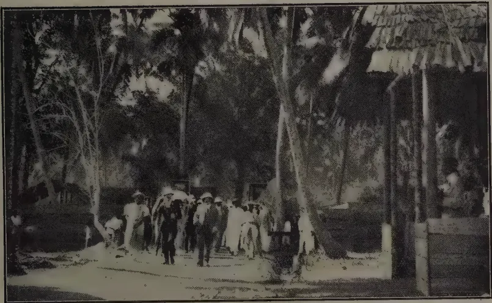
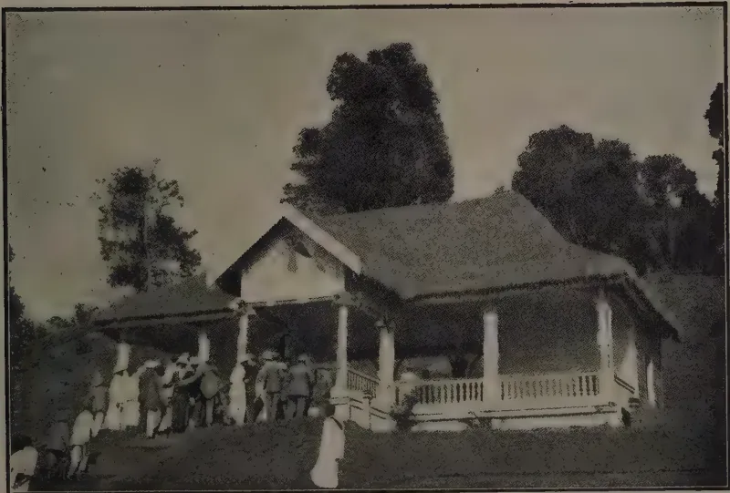
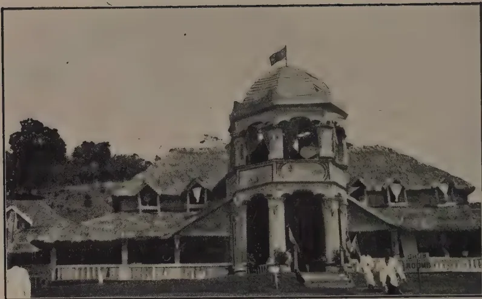
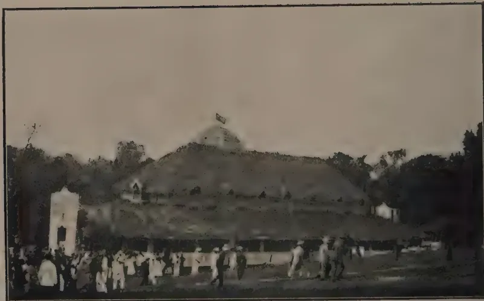

THE
TROPICAL AGRICULTURIST:
JOURNAL OF THE
CEYLON AGRICULTURAL SOCIETY.
VOL. LII.
PERADENIYA, APRIL, 1919.
No. 4.
MAIZE AS A FOOD.
The value of maize as a food is not recognised so generally as it should be in countries where rice is the staple, but there are vast tracts of the earth where maize forms the sole food of the people. With the present high prices for rice, the question has to be considered whether maize cannot be used for food, and be more economical than rice.
Maize has, in common with all other foodstuffs, increased in price very considerably, but seeing that this product can be raised in a short period of time in every district of the Colony, it could help considerably towards meeting the present shortage of cereal foods, if the general population recognised its value.
Maize is largely grown in some areas in the chenas of the Colony. In Walapane, Welimada, parts of the Eastern Province, and in the Hambantota district, maize is largely grown and is, in part, consumed and appreciated by the cultivator. These districts are well suited to maize cultivation, but maize can be grown in every district of the Colony, if it is planted so that ripening and harvesting may take place during the dry periods.
Maize is largely grown and consumed in America, and has been adopted as the staple food in the whole of South Africa, having replaced in very many places sorghum, millets and kurakkan.
It is highly nutritious, readily digestible and perfectly wholesome. Analyses show that its digestible nutrients are
184[APRIL, 1919.second only to wheat, and that the percentage of its fat-content is very high when compared with other grains. In comparison with rice, the percentage of proteins is greatly higher, while the percentage of fat is almost fifteen times that of rice. In carbohydrates the percentage is ten per cent. less.
Maize meal can be used for the manufacture of bread and cakes, or it can be made into a porridge with boiling water.
In a subsequent issue, it is proposed to reproduce some selected recipes for the use of maize in domestic cookery in the hope that this valuable food product may become more popular in the Colony during the present food scarcity.
Maize is also a valuable food for farm animals and could be used to a greater extent than it is at the present time. It is rather a heavy food and it is generally recommended that it should not be fed alone.
Maize meal when prepared by simple grinding has the disadvantage that it will not keep well for any length of time. It is apt to go rancid unless the "germ" has been removed. This is due to the high oil-content of the germ, but machinery has now been perfected for the removal of the embryo before the grain is ground into meal or flour. Such meal will keep well even in hot weather.
When the embryo cannot be removed, the maize should be stored on the cob or as whole grain and only ground into meal or flour as required. This is quite an easy process and is performed generally by the cultivators on a flat slab-stone.
With the advantages that exist in parts of the Colony for the cultivation of maize, there is no reason why it should not enter into the dietary of its people. Maize can also be grown on coconut and rubber estates between the rows of young plants. Experiments have been carried out during the past year at the Experiment Station, Peradeniya, and some very fair maize has been grown without detriment to the young rubber.
APRIL, 1919.]185Owing to the comparatively small area of rubber available for experimental purposes at Peradeniya Experiment Station, the present manurial experiments are framed entirely to ascertain the effect of Nitrogen, Phosphoric acid and Potash on general growth, bark renewal, latex yield and percentage of caoutchouc, and not to determine the most suitable mixture for manuring rubber estates generally.
So far the experiments tend to show that the Gangaroo soil was sufficiently rich to maintain healthy development for some years, but that manuring will now be necessary if present yields are to be maintained. Also that Phosphoric acid has the greatest effect on latex production, although not on the general vigour of the trees.
That manuring is necessary on most Ceylon soils, there is little doubt, especially where wash has removed much of the surface soil from the hillsides and the present experiments should in time indicate what ingredients will be required to maintain the trees in a permanently healthy and remunerative condition.
The manures employed were the same as in 1917 as published in Bulletin No. 36 of June 1918.
All the trees are tapped on one-third with one cut left to right on alternate days.
Yields in lb. and ozs. per tree.
| 1914 | 1915 | 1916 | 1917 | 1918 | ||||||
|---|---|---|---|---|---|---|---|---|---|---|
| lb. | oz. | lb. | oz. | lb. | oz. | lb. | oz. | lb. | oz. | |
| General Manure | 2 | 4 | 3 | 0 | 3 | 15 | 4 | 6 | 4 | 8 |
| Excess Nitrogen | 2 | 6 | 3 | 8 | 3 | 14 | 4 | 7 | 4 | 9 |
| " Phos. Acid | 2 | 7 | 3 | 9 | 4 | 4 | 4 | 10 | 5 | 0 |
| Excess Potash | 2 | 3 | 2 | 11 | 3 | 8 | 3 | 11 | 3 | 9½ |
| Control | 2 | 11 | 3 | 10 | 3 | 15 | 4 | 1 | 3 | 14 |
| Rainfall inches | 82.72 | 87.59 | 84.06 | 99.46 | 91.84 | |||||
| No. of wet days | 178 | 153 | 155 | 156 | 168 | |||||
Comparing the yields of 1914 and 1918 in each plot, the increases are as follows:—
| 1914-1918 | Increase per tree over Control Plot. |
|||
|---|---|---|---|---|
| lb. | ozs. | ozs. | ||
| General Mixture | ... | 2 4 | ... | 17 |
| Excess Nitrogen | ... | 2 3 | ... | 16 |
| Excess Phosphoric Acid | ... | 2 9 | ... | 22 |
| Excess Potash | ... | 1 6½ | ... | 3½ |
| Control | ... | 1 3 | ... | — |
As pointed out in the last Bulletin, the increased yield per tree per annum continues to lessen year by year; the Phosphoric Acid Plot alone
186[APRIL, 1919.giving a higher increase in 1918 compared with 1917. The Potash Plot shows a slight decrease and the Control or unmanured Plot a reduced yield of 3 ozs. per tree.
Table showing the average increase in yield per tree from 1915 to 1918.
| 1915 | 1916 | 1917 | 1918 | |
|---|---|---|---|---|
| ozs. | ozs. | ozs. | ozs. | |
| General Mixture ... .. | 11.6 | 13.0 | 8.4 | 2.0 |
| Excess Nitrogen ... .. | 18.1 | 6.1 | 8.9 | 2.0 |
| " Phos. Acid ... .. | 18.0 | 10.7 | 5.5 | 6.0 |
| Excess Potash ... .. | 8.6 | 12.8 | 2.1 | 1.5 decrease. |
| Mineral Mixture ... .. | 13.9 | 8.1 | 2.4 | — |
| Control (unmanured) ... .. | 12.2 | 6.7 | 2.0 | 3.0 decrease. |
The steady falling-off in the annual increase in the Control Plot is marked and indicates that manuring is necessary if yields are to be maintained.
In 1918 the Control Plot, has given the lowest yield 3 lb. 14 ozs. per tree except the Potash Plot with 3 lb. 9½ ozs. The Mineral Manure plot has been discontinued, one row having been removed in thinning out the rubber.
The small average increased yields in 1918 are no doubt largely due to the unfavourable weather. There were two prolonged periods of drought in the first and third quarters of the year, which affected both flow of latex and the percentage of caoutchouc as shown in the table comparing the monthly percentages in the General or complete Manure and Control Plots with the rainfall and number of wet days. It will be noticed however that the percentage of caoutchouc did not increase during the second dry period, but that the yield of latex in this and the last quarter was practically double that of the first-half of the year, as shown in the following table.
Table showing the monthly percentages of caoutchouc in the General Manure and Control Plots, compared with the rainfall and number of wet days.
| 1917 | 1918 | |||||||
|---|---|---|---|---|---|---|---|---|
| G. M. | Control. | Wet days. | Rainfall. | G. M. | Control. | Wet days. | Rainfall. | |
| January | 33.7 | 27.3 | 12 | 5.83 | 36.7 | 36.2 | 13 | 4.53 |
| February | 32.5 | 36.5 | 13 | 6.12 | 41.5 | 40.5 | — | — |
| March | 30.5 | 36.6 | 17 | 6.49 | 34.4 | 30.0 | 5 | 3.96 |
| April | 39.0 | 35.4 | 6 | 2.15 | 34.5 | 34.8 | 10 | 4.04 |
| May | 37.5 | 37.6 | 3 | 4.63 | 31.5 | 33.5 | 16 | 13.23 |
| June | 37.2 | 35.0 | 14 | 10.24 | 32.2 | 33.5 | 17 | 10.04 |
| July | 37.0 | 36.9 | 13 | 6.40 | 31.7 | 30.6 | 13 | 2.40 |
| August | 37.3 | 30.1 | 15 | 9.95 | 31.1 | 31.1 | 25 | 5.44 |
| September | 38.6 | 33.5 | 19 | 15.04 | 32.4 | 30.6 | 5 | 0.52 |
| October | 35.2 | 36.5 | 13 | 9.63 | 29.1 | 31.1 | 20 | 15.81 |
| November | 37.3 | 35.6 | 18 | 16.49 | 30.2 | 28.8 | 23 | 19.31 |
| December | 33.1 | 35.5 | 13 | 6.49 | 31.4 | 36.2 | 21 | 12.56 |
| 35.7 | 34.0 | 156 | 99.46 | 33.1 | 32.7 | 168 | 91.84 | |
Table showing the quarterly yields of latex and rubber with percentage of caoutchouc in each Plot for 1918.
General Mixture.—Plot 83 Rows A & B. 29 trees.
| Quarters. | Latex c. c. | Rubber gms. | Scrap gms. | Per cent Caoutchouc. |
|---|---|---|---|---|
| January-March | 27,910 | 10,677 | 1,181 | 38.4% |
| April-June | 29,890 | 9,647 | 1,040 | 32.5,, |
| July-September | 62,140 | 19,614 | 1,203 | 31.6,, |
| October-December | 48,820 | 14,575 | 1,159 | 29.9,, |
| 168,760 | 54,513 | 4,583 | 33.1,, |
Excess Nitrogen.—Plot 83 Row D and 84, Row A. 42 trees.
| Quarters | Latex c. c. | Rubber gms. | Scrap gms. | Per cent Caoutchouc. |
|---|---|---|---|---|
| January-March | 40,010 | 15,004 | 1,527 | 37.5% |
| April-June | 47,800 | 16,526 | 1,344 | 34.6,, |
| July-September | 84,100 | 26,845 | 1,395 | 32.7,, |
| October-December | 70,140 | 22,645 | 1,471 | 32.3,, |
| 242,050 | 81,020 | 5,737 | 34.3,, |
Excess Phosphoric Acid.—Plot 84 Rows C & D. 34 trees.
| Quarters. | Latex c. c. | Rubber gms. | Scrap gms. | Per cent Caoutchouc. |
|---|---|---|---|---|
| January-March | 32,300 | 12,384 | 1,392 | 38.3% |
| April-June | 38,770 | 13,811 | 1,251 | 35.6,, |
| July-September | 78,270 | 24,480 | 1,274 | 31.3,, |
| October-December | 64,190 | 20,650 | 1,426 | 32.2,, |
| 213,530 | 71,325 | 5,343 | 34.4,, |
Excess Potash.—Plot 85 Row D & 86 Row A. 35 trees.
| Quarters. | Latex c. c. | Rubber gms. | Scrap gms. | Per cent Caoutchouc. |
|---|---|---|---|---|
| January-March | 24,550 | 9,372 | 1,335 | 38.2% |
| April-June | 24,790 | 8,281 | 1,028 | 33.4,, |
| July-September | 55,390 | 18,538 | 1,267 | 33.5,, |
| October-December | 50,640 | 16,790 | 1,176 | 33.1,, |
| 155,370 | 52,981 | 4,806 | 34.6,, |
Mineral Mixture.—Plot 86 Rows B & C. 40 trees.
| Quarters. | Latex c. c. | Rubber gms. | Scrap gms. | Per cent Caoutchouc. |
|---|---|---|---|---|
| January-March | 31,550 | 12,185 | 1,387 | 38.6% |
| April-June | 14,660 | 4,773 | 1,218 | 32.5,, |
| July-September | 21,000 | 6,694 | 1,226 | 31.9,, |
| October-December | 21,640 | 7,190 | 1,146 | 33.2,, |
| 88,850 | 30,842 | 4,977 | 34.1,, |
Control.—Plot 85 Rows A & B. 25 trees.
| Quarters. | Latex c. c. | Rubber gms. | Scrap gms. | Per cent Caoutchouc. |
|---|---|---|---|---|
| January-March | 19,610 | 7,210 | 1,268 | 36.7% |
| April-June | 22,390 | 7,533 | 1,039 | 33.6,, |
| July-September | 42,730 | 13,129 | 1,068 | 30.7,, |
| October-December | 36,810 | 11,690 | 1,037 | 31.8,, |
121,540 |
39,562 |
4,412 |
33.2,, |
Table of Rubber Girths for January 1918 and January 1919.
| Plots. | 1918 inches |
1919 inches |
Total increase |
Average increase for 5 years |
|
|---|---|---|---|---|---|
| General Mixture | Average | 43.72 | 45.31 | ||
| Increase | 2.68 | 1.59 | 15.84 | 3.17 | |
| Excess Nitrogen | Average | 43.90 | 45.57 | ||
| Increase | 2.88 | 1.67 | 15.69 | 3.14 | |
| Excess Phos. Acid | Average | 43.26 | 44.97 | ||
| Increase | 2.78 | 1.71 | 15.54 | 3.11 | |
| Excess Potash | Average | 41.85 | 44.13 | ||
| Increase | 1.47 | 2.51 | 14.84 | 2.97 | |
| Control | Average | 44.24 | 46.40 | ||
| Increase | 3.26 | 2.16 | 18.76 | 3.73 |
In all manured Plots, the girth-increase shows a steady annual decline from about 4.25 inches per tree in 1914 to about 1.86 inches in 1918. The falling-off is less marked in the Control Plot and there is a slight rise during 1918 in the case of the Potash Plot.
Ratio and Yields of Total Dry Rubber Quarterly.
| 1916. | 1917. | 1918. | ||||
|---|---|---|---|---|---|---|
| Yield in gms. | Ratio. | Yield in gms. | Ratio. | Yields in gms. | Ratio. | |
| General Manure | ||||||
| 1st. | 414.64 | 100 | 565.36 | 100 | 408.54 | 100 |
| 2nd. | 355.06 | 86 | 438.09 | 78 | 368.51 | 90 |
| 3rd. | 434.85 | 105 | 388.85 | 69 | 717.81 | 176 |
| 4th. | 589.18 | 143 | 589.98 | 104 | 543.00 | 134 |
1,793.73 |
1,982.34 |
2,037.86 |
||||
| Excess Nitrogen | ||||||
| 1st. | 427.42 | 100 | 598.13 | 100 | 393.57 | 100 |
| 2nd. | 364.10 | 85 | 423.86 | 71 | 425.47 | 108 |
| 3rd. | 416.82 | 98 | 441.16 | 74 | 672.37 | 172 |
| 4th. | 559.69 | 131 | 559.10 | 93 | 574.40 | 147 |
1,768.03 |
2,022.31 |
2,065.81 |
||||
| Excess P2O5 | ||||||
| 1st. | 429.54 | 100 | 566.31 | 100 | 405.17 | 100 |
| 2nd. | 412.31 | 96 | 435.07 | 77 | 443.00 | 110 |
| 3rd. | 464.96 | 108 | 471.40 | 84 | 757.46 | 187 |
| 4th. | 633.84 | 148 | 636.43 | 112 | 649.50 | 160 |
1,940.65 |
2,099.21 |
2,255.13 |
||||
| 1916 | 1917 | 1918 | ||||
|---|---|---|---|---|---|---|
| Yield in gms. | Ratio | Yield in gms. | Ratio | Yield in gms. | Ratio | |
| Excess Potash | ||||||
| 1st. | 338.87 | 100 | 514.76 | 100 | 305.90 | 100 |
| 2nd. | 346.70 | 102 | 404.30 | 79 | 265.97 | 87 |
| 3rd. | 404.90 | 120 | 316.67 | 62 | 565.84 | 185 |
| 4th. | 526.79 | 155 | 456.44 | 89 | 495.20 | 162 |
1,617.26 |
1,692.23 |
1,632.91 |
||||
| Control | ||||||
| 1st. | 418.64 | 100 | 567.32 | 100 | 339.12 | 100 |
| 2nd. | 408.12 | 98 | 397.12 | 70 | 342.88 | 101 |
| 3rd. | 414.12 | 99 | 351.04 | 62 | 567.88 | 168 |
| 4th. | 573.12 | 138 | 520.84 | 93 | 508.96 | 150 |
1,814.00 |
1,836.32 |
1,758.84 |
||||
Average Composition of Soil on Plots 80 to 87.
| Fine soil passing 90 mesh | ... | 30.34% |
| —do— 60 mesh | ... | 22.00 „ |
| —do— 30 mesh | ... | 9.00 „ |
| Coarse Sand and Stones | ... | 38.66 „ |
100.00 „ |
||
| Moisture | ... | 3.733 |
| Organic matter and Combined water | ... | 9.600 |
| Iron and Manganese | ... | 9.200 |
| Alumina | ... | 9.908 |
| Lime | ... | 0.063 |
| Magnesia | ... | 0.105 |
| Potash | ... | 0.167 |
| Phosphoric Acid | ... | 0.055 |
| Soda | ... | 0.081 |
| Sulphuric Acid | ... | trace |
| Chlorine | ... | 0.018 |
| Sand and Silicates | ... | 67.066 |
99.996 |
||
| Containing Nitrogen | ... | 0.150 |
| Citric Soluble Potash | ... | 0.009 |
| „ „ Phosphoric Acid | ... | trace |
| Lower Oxide of Iron | ... | nil |
| Acidity | ... | faint. |
The analysis of the soil shows it to be similar in many respects to other rubber soils in Ceylon. The physical composition is satisfactory, but from the chemical point of view, it is very deficient in total and especially in available Phosphoric Acid.
The results obtained from the application of an excess of this constituent bear out the analytical figures.
February 20th, 1919.
M. KELWAY BAMBER,
Agricultural Chemist.
(First year's output of Daily Tapping and Every-other-Day Tapping.)
| Daily Tapping. | Every-other-Day Tapping | Rainfall | ||||||||||||||||
|---|---|---|---|---|---|---|---|---|---|---|---|---|---|---|---|---|---|---|
| No. of Days Tapped | Dry Weight | Scrap | Total | No. of Days Tapped | Dry Weight | Scrap | Total | Tap-pers | ||||||||||
| lb. | ozs. | lb. | ozs. | lb. | ozs. | lb. | ozs. | lb. | ozs. | lb. | ozs. | |||||||
| 1 | April | 18 | 172 | 05 | 51 | 12 | 224 | 04 | 71 | 10 | 96 | 00 | 31 | 02 | 127 | 02 | 37 | 7.27 |
| 2 | May | 23 | 273 | 10 | 62 | 02 | 335 | 12 | 89 | 11 | 163 | 02 | 30 | 10 | 193 | 12 | 43 | 17.46 |
| 3 | June | 24 | 267 | 00 | 60 | 05 | 327 | 05 | 93 | 14 | 209 | 09 | 34 | 14 | 244 | 07 | 53 | 2.35 |
| 4 | July | 25 | 276 | 03 | 49 | 13 | 326 | 00 | 97 | 12 | 161 | 01 | 30 | 02 | 191 | 03 | 48 | 8.30 |
| 5 | August | 28 | 247 | 04 | 47 | 02 | 294 | 06 | 109 | 15 | 208 | 04 | 41 | 03 | 249 | 07 | 57 | 2.90 |
| 6 | September | 24 | 237 | 07 | 54 | 10 | 292 | 01 | 95 | 14 | 263 | 06 | 33 | 02 | 296 | 08 | 55 | 1.85 |
| 7 | October | 23 | 289 | 05 | 43 | 06 | 332 | 11 | 91 | 11 | 341 | 10 | 30 | 11 | 372 | 05 | 43 | 11.52 |
| 8 | November | 25 | 629 | 00 | 35 | 09 | 664 | 09 | 99 | 11 | 620 | 08 | 39 | 03 | 659 | 11 | 44 | 13.57 |
| 9 | December | 25½ | 569 | 05 | 52 | 15 | 622 | 04 | 102 | 14 | 621 | 07 | 52 | 08 | 673 | 15 | 54 | 11.20 |
| 10 | January | 31 | 407 | 05 | 60 | 09 | 467 | 14 | 121 | 16 | 538 | 10 | 34 | 00 | 572 | 10 | 62 | 6.90 |
| 11 | February | 22 | 103 | 01 | 17 | 08 | 120 | 09 | 88 | 12 | 188 | 08 | 27 | 0 | 215 | 09 | 47 | 1.05 |
| 268½ | 3471 | 13 | 535 | 11 | 4007 | 08 | 1055 | 140 | 3412 | 01 | 384 | 08 | 3796 | 09 | 543 | 84.31 | ||
The experiments quoted in previous page were carried in two fields of flat (high) land. Trees were marked at 28 inches from the ground and latex was measured from the Latexometer. In October 1st, tapping was changed to the opposite side 8 inches from the ground. These fields were planted 15 in. by 15 in 1910 and in 1918, 30 trees per acre were removed. On September 1st, 120 trees to each field were added (i.e., 1,320 daily and 1320 every other day).
Calculating at 160 trees per acre daily tapping field of 1,200 trees on acres it gave an average of 201 lb. per acre for the first five months and 1320 trees on acres gave an average of 303 lb. per acre for the last six months, i.e., an average yield of 504 lb. of dry rubber per acre for the 11 months.
And every-other-day tapping field of 1,200 trees on acres gave an average of 134 lb. for the first five months and 1,320 trees on acres gave an average of 338 lb. per acre for the last six months, that is an average yield of 472 lb. of dry rubber per acre for 11 months. The difference is only 32 lb. for an acre.
For five months each cooly tapped 300 trees and later 30 more were given to each cooly.
A. M. C. DIAS.
Mahawila Estate,
Panadure, 7th March, 1919.
Para rubber has now become the main crop on large numbers of plantations, particularly in the more humid parts of the Protectorate, and coffee is being grown and treated only as a catch crop.
The year's exports were 144,727 lb. of plantation rubber and 9,362 lb. of forest rubber, valued at £9,965 and £923 respectively.
The export of plantation rubber was double the previous year's output, and it is confidently expected that this rate of increase will be maintained. Other rubbers are neglected, as Hevea is proving to be well suited to the prevailing conditions. Growth is slow, but the crop suffers little from pests and diseases.
Tapping results obtained in the Botanic Gardens, Entebbe, and on the Government plantations, Kampala and Kakumiro are quite satisfactory, whilst the Kivuvu and Mabira Estates are proving the success of rubber on a large scale.
Last year's local seed supply was very small and poor, otherwise larger areas would have been planted up, but this season a large sound crop is expected, so rubber planting will be able to extend rapidly.
The shipping of the rubber has been satisfactorily arranged, but prices are low owing to the United States restrictions of import and prices. Prices cannot be expected to improve until these restrictions are removed, as the United States are the largest buyers of rubber.—ANN. REPT., DEPT. OF AGRIC, UGANDA PROTECTORATE, 1918.
192[APRIL, 1919.The total area under tea in 1917 was 664,300 acres, which is 2 per cent. greater than that in the preceding year. The area abandoned in the year was 3,900 acres, while the new extensions (including re-planting in areas abandoned in previous years) amounted to 19,300 acres. Thus the nett increase during the year was 15,400 acres. The figures are for the most part those reported by planters. In the case of those plantations for which figures are not so reported, estimates have been prepared by local officers. Special efforts were, however, made to procure returns direct from non-reporting gardens, and these efforts have so far been successful except in Southern India, as will be seen from the following figures :—
| 1916. | 1917. | ||
|---|---|---|---|
| Bengal | ... | none out of 301 | one out of 305 |
| Assam | ... | " " 786 | none " 796 |
| Southern India | ... | 57 out of 289 | 38 out of 318 |
In the year under review, estimates had to be made in respect of 38 gardens out of a total of 318 gardens in Southern India and of only one garden out of 305 in Bengal. Including the estimated area, the total area under tea in 1917 was shared among the different Provinces as shown below :—
| Area acres. |
Increase (+) or decrease (−) per cent. |
||
|---|---|---|---|
| Assam | ... | 399,700 | + 27 |
| Bengal | ... | 167,800 | + 0.9 |
| Southern India | ... | 76,300 | + 4.8 |
| Northern India | ... | 15,500 | ... |
| Behar and Orissa | ... | 2,200 | ... |
| Burma | ... | 2,800 | ... |
The percentage increase or decrease as compared with the preceding year is also stated. The cultivation of tea in India has been mainly concentrated in tracts where a heavy rainfall and a humid and equable climate permit of repeated flushes and pluckings of the leaf. Eighty-five per cent. of the total area under tea in India lies in Assam (in the Brahamaputra and Surma Valleys) and the two contiguous districts (Darjeeling and Jalpaiguri) of Northern Bengal. The elevated region over the Malabar Coast in Southern India (including the State of Travancore and the districts of Malabar, Nilgiris and Coimbatore) contains over 11 per cent. of the total.
Of the total area of 664,300 acres, for which either returns or complete estimates have been received, 614,800 acres were reported to have been plucked during the year, as against 601,400 acres in the preceding year. On the remaining 49,500 acres, the plants were either too young to be plucked or were not plucked at all.
APRIL, 1919.]193The total number of plantations was 4,252 in 1917, as against 4,486 in the preceding year. The decrease is due to the fact that during the recent Settlement operations in the Punjab, several small plantations were in many cases, treated as one. In Burma, where tea plants are grown scattered in the jungle, each village tract having tea plants has been taken to represent one plantation. The plantations vary greatly in size in the different Provinces. In Assam 796 plantations are reported to have a total area of 399,700 acres under tea in 1917, that is, an average of 502 acres per plantation. In Bengal the average size of 305 plantations is 550 acres, and in Travancore the average of 128 plantations is 339 acres. In Madras, the United Provinces, and Behar and Orissa the average is much smaller, being about 174 acres, 129 acres, and 99 acres respectively. In the Punjab, where tea cultivation is conducted on a small scale, the average area is about 3 acres. These figures, which refer to the year 1917, relate only to tea-bearing areas and do not include the area in the occupation of planters, but not under tea cultivation.
The total production of both black and green teas in 1917 is reported to have been 370,358,000 lb. (excluding Burma), divided between the different parts of India as shown below:—
| 1916. | 1917. | |
|---|---|---|
| lb. | lb. | |
| Assam ... | 212,185,000 | 243,940,000 |
| Bengal ... | 92,645,000 | 91,853,000 |
| Southern India ... | 29,324,000 | 30,916,000 |
| Northern India ... | 3,883,000 | 3,340,000 |
| Behar and Orissa ... | 246,000 | 309,000 |
| Total ... | 368,283,000 | 370,358,000 |
Black tea represents 368,123,000 lb. The nett increase as compared with the preceding year amounts to about 2 million lb. or 0.6 per cent. It should, however, be borne in mind that these figures cannot be taken as entirely accurate, for, as already stated above under "Area" (page 192), estimates had to be made for as many as 39 gardens for which returns were not furnished by planters. It is noticeable that, while the area under cultivation has increased by 24 per cent. in the decade, the increase in production has been one of 51 per cent. Burma is excluded from these calculations because the produce of the Burma tea gardens is almost wholly converted into letpet (wet pickled tea), which is eaten as a condiment. In 1917, 432,300 lb. of letpet were manufactured as against only 5,400 lb. of leaf tea (black).
(Decennial Average, 1901-1910=100).
| Variation in | ||
|---|---|---|
| Area. | Production. | |
| 1907 ... | 100 | 107 |
| 1908 ... | 102 | 108 |
| 1909 ... | 103 | 113 |
| 1910 ... | 105 | 115 |
| 1911 ... | 107 | 118 |
| 1912 ... | 110 | 130 |
| 1913 ... | 113 | 134 |
| 1914 ... | 116 | 137 |
| 1915 ... | 118 | 163 |
| 1916 ... | 121 | 161 |
| 1917 ... | 124 | 162 |
The average production of tea per acre varies very greatly in the different districts. The marginal table shows the average production of
| lb. per acre. | manufactured tea (black and green) per acre plucked in each district in 1917. The highest production in the year was in Lakhimpur (Assam), namely, 745 lb. per acre. and the lowest in Garhwal (United Provinces), namely, 42 lb. The average production in the whole of India (excluding Burma) was 604 lb. per acre plucked, as against 614 lb. in the previous year. Up to the end of June, the yield was heavy. During the months of July, August and September, the out-turn went back a little, but towards the close of the season a heavy crop was again obtained as in the preceding year. Intensive cultivation undoubtedly accounts for the exceptional out-turns again obtained during the latter part of the year, which, although not quite up to those of 1915, were exceedingly heavy. As regards the quality of the tea manufactured, it is stated by a leading tea firm that, owing to the irregular way in which teas were offered during the season, it is somewhat difficult to give a clear idea as to quality. A noticeable and satisfactory feature generally was, however, "more careful manufacture with considerably less stalk." The quality of Assam teas was generally of a useful standard, and that of the Jalpaiguri crop fully up to the average. The Darjeeling | |
|---|---|---|
| Lakhimpur | 745 | |
| Jalpaiguri | 714 | |
| Darrang | 667 | |
| Sibsagar | 658 | |
| Nowgong | 616 | |
| Sylhet | 602 | |
| Cachar | 591 | |
| Travancore | 510 | |
| Madura | 494 | |
| Malabar | 453 | |
| Nilgiris | 450 | |
| Coimbatore | 413 | |
| Goalpara | 410 | |
| Chittagong | 408 | |
| Dehra Dun | 408 | |
| Damrup | 375 | |
| Darjeeling | 356 | |
| Chittagong Hill Tracts | 201 | |
| Ranchi | 148 | |
| Kangra | 140 | |
| Tinnevelly | 110 | |
| Almora | 83 | |
| Hazaribagh | 79 | |
| Garhwal | 42 | |
| Weighted average | 604 |
crop was poor in quality, and owing to bad weather throughout the district no fine second flush teas were manufactured. Cachar and Sylhet produced good liquoring teas fully up to standard.
The figures of production given above include both black and green teas. The difference between the two kinds of tea arises from the different methods of preparation. Briefly, the distinction is that the process of fermentation, which gives to black tea its colour, is avoided or arrested in the case of green tea. "While the object aimed at in preparing black tea is to change the materials in the leaf, by fermentation, the green colour becomes brown or black, the astringency is reduced, and the aroma altered in character; in manufacturing green tea, the aim is to prepare the leaf without any alteration taking place." The total quantity of green tea reported to have been manufactured in the year under review is 2,235,000 lb., as compared with 2,523,000 lb. in 1916 and 3,043,000 lb. in 1915. The quantity manufactured in each tract in the last two years is stated below. About two-fifths of the total quantity were manufactured in the Kangra Valley (Punjab) in the year under review. Bounties were paid on green tea from the Tea Cess Fund up to March 1909, but since that date no bounties have been paid.
| 1916 lb. | 1917 lb. | |
|---|---|---|
| Northern India | 1,262,000 | 951,000 |
| Southern India | 888,000 | 474,000 |
| Surma Valley | 162,000 | 522,000 |
| Bengal and Behar & Orissa | 219,000 | 288,000 |
| Total | 2,523,000 | 2,235,000 |
—REPT. ON THE PRODUCTION OF TEA IN INDIA IN 1917.
APRIL, 1919.]195W. MOLEGODE, S. A. I.
According to the C. A. S. Year Book, we imported in 1917, 10,154 cwt. of turmeric valued at Rs. 127,000. Now, turmeric is a commodity used every day in our homes. It is a crop that can be easily cultivated and at present is seen growing in back yards of village houses and in very weedy and neglected village gardens. The money spent on turmeric on foreign markets is not at all justifiable. When in 1917 the garden at Dunuwile was opened and partly planted with turmeric, the villagers laughed at the idea of growing turmeric in a well-cultivated soil. Mr. J. A. Rambukpota, who has been assisting me in the Dunuwile work, describes fairly well what happened : " They (the villagers) pointed to the amount of turmeric growing wild in their neglected gardens, behind their houses and around their galas under the thickest shade, of which they apparently made no use. In spite of their scorn of an acre was laid out in beds and planted with turmeric. Late last year a crop of 600 lb. was raised. The villagers themselves raised their neglected crops and volunteered to sell it at to 2 cents a lb. Four villagers collectively sold some 350 odd lb. This and the 600 lb. from the garden were cured and 160 lb. of cured turmeric obtained. Part of this is being sold to the villagers themselves at 20 cents per lb. They have to pay 30 to 35 cents in the boutiques. Those who sold the green turmeric last year as well as others are growing this crop this year."
The above shows that the extensive cultivation of turmeric can be encouraged. Turmeric is a crop that is very easy to grow. Detailed information is given in C. A. S. Leaflet LXI. The method adopted in curing may be described : First the adhering earth is removed and in the case of large roots they are split into two. This is then put into a large vessel and water just sufficient to cover the roots is added. The vessel is covered with another pot and set on fire to boil slowly for about 3 hours. The roots are then removed from the vessel and spread out to dry for about a week or ten days. When quite dry the skin should be removed either by hand or by treading under foot.
There was no rain during the month and consequently all agricultural operations suffered. In most cases vegetable gardens and their crops have been damaged. In the Kandy District the paddy crop is being gathered. The crop is not very satisfactory.
Dhall, which is now fairly largely cultivated was in most parts harvested. The cultivation of garden variety of dhall is being taken up more largely. There has been a good crop of gourds (wattaka, puhul and labu).
Kurakkan crop is also being gathered now. All over the chena crops are very satisfactory.
Price of rice has gone down considerably and with the paddy harvest on, it is expected the price will go down still more.—Extract from Diary of Senior Agricultural Instructor
196[APRIL, 1919.W. MOLEGODE, S.A.I.
Of the many "English Vegetables" grown in Ceylon, Carrot (Daucus Carota) is about the best suited to all elevations and conditions here, and is one of the vegetables of that class relished by the people. It can be grown successfully in the sea coast, dry Jaffna and Anuradhapura and at most elevations and climates in Ceylon. If only less in flavour as good carrots have been raised in Anuradhapura and Kandy as in Nuwara Eliya. Carrots acclimatise readily but locally raised seed give a less-flavoured carrot which also loses its original colour and shape, but the object being not to raise "Exhibition carrot" but add to the food supply of the country, carrot is to be highly recommended as a vegetable and food that every gardener should cultivate. It will mature in to 6 months, and seeds can be obtained in the second year.
There are a number of varieties differing in colour, shape and flavour, but all these may be classed under 2 main heads, viz., long and short rooted kinds. For the long-rooted varieties, a deep, well-worked rich sandy loam is the ideal soil, and for the short kind a few inches of fine loamy soil is recommended. Carrots however thrive in nearly all well-worked soil. Given a stiff heavy clay, if properly drained and dug deep, will suit; but in this case it would be better to sow in raised ridges. One important point to remember in growing carrots is not to apply fresh manure as it will always encourage the production of fibres and fangs. A land that had been well manured for the preceding crop will give the best results. The soil for carrots must be thoroughly worked, broken fine and made friable throughout. If manure is to be applied, use only well decomposed farmyard manure and see that the same is evenly and well mixed with the soil.
If cultivated on a large scale, carrots are easier sown on drills, which should be 9 inches to 18 inches apart according to the variety to be grown. Seed should be sown 1 inch deep in the soil. The question of thinning requires some attention. It must be done gradually and as the plants grow up. First thin out when plants are 4 inches high to about 3 inches apart finally to 9 inches. The advantage of periodical thinning is that the tender little roots can be used for food. If cultivation is on a small scale, carrots are preferably grown in beds. Beds may be of any length but not more than 5 feet wide. Having formed the beds, drills one inch deep should be made at 9-12 inches apart, according to the variety. Sow the seed and cover them up. Later thin out. If the soil is dry, water immediately after sowing. For carrot much water is not necessary, but the soil must be moist. In specially hot weather in addition to watering, shade of some sort is required during mid-day sun. After treatment is confined to weeding where necessary and watering in dry weather.
Carrot seeds take a fortnight or more to germinate. To help germination the seed may be steeped in water previous to sowing. Mix the seed with sand to ensure uniformity in sowing. 3-4 lb. of seed will be required for one acre if drilled.
(Copy of extract from a letter from Mr. S. Tyagaraja, Proctor S. C., Trincomalee, dated 15th January, 1919.)
"I will also request you to send me half-a-pound of chilli seeds. The seeds you sent me last year were planted in a two-acre block which yielded a nett profit of Rs. 320. I have also planted this year. They are in bearing. As I desire to put an additional plot next month on irrigation for the purpose of obtaining dried chillies, I need this -lb., which please send by V. P. P."
APRIL, 1919.]197C. B. SAYRE.
Onions are grown very extensively on the peat or muck soils of Northern Indiana, the crop of 1914 amounting to 2,210,325 bushels.
Good drainage is an important factor in selecting muck soil for profitable onion growing. The soil should be well prepared before planting; many growers prefer to prepare the land in autumn. Rolling is of great value.
Potash is the element most deficient in the non-acid muck soils, and muriate of potash applied at the rate of 200 to 400 pounds per acre will give a very profitable increase in yield with normal prices. Acid phosphate at the rate of 300 to 400 pounds per acre can usually be applied profitably to the muck soil for onions. The acid muck soils are especially deficient in phosphorus, and larger amounts should be applied to them. Nitrate fertilisers can seldom be applied with profit to the muck soils. Lime cannot be applied with profit except to the acid muck soils. Manure is the best all-round fertiliser for onions, but under normal conditions, chemical fertilisers can be applied most economically to the muck soils. The manure should be well rotted.
The great bulk of the onions grown on the Indiana muck soils are for autumn and winter use, and for this purpose, the yellow globe type is the most commonly grown, although the red globe varieties are also very popular. The white varieties are grown principally for pickling. The Southport yellow globe is the most popular yellow variety, while the Ohio yellow globe and yellow globe Danvers are grown to a lesser extent. Of the red varieties, the Southport red globe is most popular, and the red Wethersfield and Ohio red globe are also grown. Of the white varieties, the Southport white globe is preferred for large, mature white onions, while the white Portugal and Silver Skin are popular varieties for pickling.
Onion seed should be sown in rows 12 to 14 inches apart at the rate of to 4 lb. per acre as early in the spring as the ground can be worked. Frequent cultivation with wheel hoes, and two or three hand weedings are necessary. The onions are harvested about September 1. The best growers average over 500 bushels per acre, which sell at an average of 40 cents per bushel. It costs about $75.00 to produce an acre of onions. A large part of the Indiana crop is stored.
Onion sets and pickling onions are grown extensively in Lake country. The culture is similar to that of large onions, except that the small onions are produced by thick seeding (50 to 80 lb. per acre). Onion seed is grown successfully by some of the large growers of Indiana.
There are three insect pests, namely thrips, maggots and cutworms which sometimes cause considerable loss to the onion growers in Northern Indiana.
The onion thrips (Thrips tabaci) chafes off the epidermis of the leaves, principally at their base, producing yellowish, gray irregular spots on the leaves, later causing the entire leaf to dry up and die. In order to spray onion thrips successfully, high pressure (at least 100 lb.) and a fine mist-like spray which can be directed into the base of the onion leaves are necessary. A gasoline outfit or good hand pump outfit equipped with a long line of hose and extension rod is the most satisfactory type that has been used thus far. The following spray material is very efficient if it comes in actual contact
198[APRIL, 1919.with the insect : concentrated nicotine sulphate 5 ozs , whale oil soap, 4 lb. ; water 50 gals. The spray should be applied when the thrips first appear and the onions are small and easily sprayed. It will probably have to be repeated 2 or 3 times at intervals of 10 days in order to destroy succeeding generations as they hatch.
The onion fly (Phorbia ceparum) lays its eggs in the sheath of the onion when the plants are very small. The eggs hatch in about 10 days and the maggots burrow into the bulbs of the onion, causing the loss of the plant. Sometimes whole fields are thus ruined. A second and sometimes a third brood appears later in the season. Field hygiene is especially important in controlling onion maggots. A new method of control devised at the Wisconsin Experiment Station, is claimed to give excellent results. This treatment, called the "poison bait spray," destroys the flies which lay the eggs. It is used as follows : as soon as the onion seedlings appear, the first spray should be applied, and it should be repeated at intervals of 5 days or a week during the period when the flies are present. The spray consists of one ounce of sodium arsenite, 2½ quarts of New Orleans molasses and 5 gals. of water. The arsenite should be dissolved in boiling water and the molasses added and thoroughly mixed. This bait must be applied, by means of a whisk broom or of a spray outfit with a coarse nozzle, in large drops along the rows so that the flies can drink it. After onions have become infested with maggots, there is nothing that will remedy the difficulty that season, but infected plants should be promptly removed and burned in order to reduce the number of insects that will appear the following season, and then the poisoned bait applied in time to destroy the flies before they can lay their eggs.
Cut-worms cut off the young plants at the surface of the ground. They can be controlled by the use of poisoned bait prepared as follows : Mix 50 lb. of wheat bran or middlings, 2 lb. of Paris green and 6 finely-chopped oranges or lemons. Then add enough cheap molasses and a little water to make a stiff dough. In the later afternoon, as cut-worms feed principally at night, scatter lumps of this mixture about the size of a marble around the infested areas.
As a general rule the onion growers in Northern Indiana have suffered comparatively little loss from diseases of onions. Onion mildew (Peronospora Schleideni) is the most serious disease and may be controlled by spraying with Bordeaux mixture.—BULL. INTERNAT. INST. OF AGRIC. YEAR IX No. 4.
Last year the Ceylon Agricultural Society received 18 named varieties of this bean from Yokohama and these were tried in several districts. As a result, it has been discovered that the bean does well at fairly high elevations with a dry climate—such as Bandarawela and Harasbedde. At the latter place, the growth was specially good, and the seed was of larger size than those planted.
Small packets of the following varieties are available to members who would like to try them :—
| Black, late | Nepali, twining |
| Black, early | Yellow, erect |
| Yellow, hilum brown | Black, erect |
| Green yellow, large, hilum dark brown | Barmeli, twining |
| Assam Soya bean | Barchet |
| Chocolate | Riceland |
| Pale chocolate | Black-mottled Java |
| Barmeli, erect | Dull Terra Cotta brown |
| Nepali, erect | Dull, Brownish black |
W. MOLEGODE,
(Senior Agricultural Instructor.)
That paddy when transplanted yields a better crop is an axiom. The many experiments conducted in conjunction with the Agricultural Society have given very encouraging results, and in districts where transplanting was not known 15 years ago, it is now the practice always to transplant unless unfavourable weather conditions interfere. Not only does transplanting yield a better crop, but there is a considerable saving of seed-paddy. In some districts the seed-rate, when broadcasted, is ridiculously high. If transplanting is adopted not more than half-a-bushel per acre is necessary.
Of the many experiments, of which careful records have been kept, the following may be given for general information :—
| Centre. | Method. | Yields in bushels per acre. | |||
|---|---|---|---|---|---|
| Transplanted | Broadcasted | ||||
| Poraduwa (Matale) | Single Seedling | 9 × 9 | 42 | 24 | |
| Maragoda ( , , ) | do | 4—6 | 76½ | 25 | |
| Hanwella (Colombo) | do | 4 × 6 | 57½ | 25 | |
| Minneri (Anuradhapura) | do | 4 × 9 | 40 | 20 | |
| Horana | do | 6 × 8 | 96 | 30 | |
| Ambalangoda | do | 9 × 9 | 58 | 20 | |
| Welimada (Uva) | 2-3 Seedlings | 4—5 | 57 | 37½ | |
| Chilaw | 4-6 do | 4—6 | 61 | 36 | |
| Badulla | 3 do | 7 × 7 | 40 | 30 | |
| Peradeniya | 3 do | 6 × 6 | 90 | 56 | |
| Harispattu (Kandy) | 3 do | 6 × 6 | 52 | 35-40 | |
| Badulla | 3 do | 6 × 6 | 60 | 30 | |
| Katugastota | 3&4 do | 4—5 | 57 | 37½ | |
| Harispattu (Kandy) | 3&4 do | 6 × 6 | 60 | 36 | |
| Harispattu ( , , ) | 3 do | 6 × 6 | 52 | 35 | |
| Kadugannawa | 3 do | 6 × 6 | 61 | 40 | |
| Godigama | Single Seedling | 4 × 4 | 90 | 30 | |
| Tihagoda (Matara) | 3—4 Seedlings | 4—6 | 20 | 10 | |
| Kamburupitiya | 3—4 do | 4—6 | 24½ | 8 | |
| Owitigama | 3—4 do | 4—6 | 25 | 10 | |
In Madampe (Chilaw district) a yield equal to 66 bushels per acre raised from 8 measures of seed was obtained by transplanting 3 & 4 plants, 6 inches apart against the ordinary yield of 40 bushels with 2 bushels seed.
In the Kandy district most of the fields are transplanted. The following are some of the more recent experiments :—
Centre (a) Dunuwile.—5 lahas of selected seed were sown in nursery and transplanted in bunches of 3 & 4 plants at approximately 6 inches apart
200[APRIL, 1919.and the yield was 62 bushels against a yield of 40 to 45 bushels when transplanted with ordinary seed.
(b) 3/5 bushel sown in a nursery and seedlings transplanted on -acre (3 plants 6 x 6) gave a yield of 40 bushels per acre.
(c) Gampola.—Seedlings raised from -bushel paddy were transplanted in bunches of 3 & 4 plants at approximately 6 inches apart. Yield 45 bushels.
From the above results, it will be seen that no hard-and-fast rule can be laid as regards the distance of transplanting or the number of plants to be put in each hole, both of which depends on the nature of the field, the quality of seed and the preparation of the soil. In Kandy, the following results would show the best methods to adopt, is to put 3 plants 6 x 6 :—
| At Gallewele | ... | 3-4 | seedlings | 6 x 6 | gave | 60 | bushels |
| " Watuwila | ... | 3 | " | " | " | 57 | " |
| " Nugawela | ... | 3 | " | " | " | 52 | " |
| " Peradeniya | ... | 2 | " | " | " | 90 | " |
| " Galasiya Pattu Korale | ... | 3 | " | " | " | 52 | " |
| " Kadugannawa | ... | 3 | " | " | " | 61 | " |
| " Dunuwile | ... | 3-4 | " | " | " | 62 | " |
| " Gampola | ... | 3-4 | " | " | " | 45 | " |
Taking the results of all experiments and taking into account the methods adopted by experienced cultivators, 3 plants per hole, (4 being the maximum) at distances varying from 6-9 inches apart seems to be the method to be recommended. The extra labour of separating the plants, so that single plants may be put out, can be avoided.
The age at which seedlings are transplanted is of the greatest importance. No plants should be put out which has made a hard node (joint) at the bottom. Such a plant will only "run away" and will not tiller. The easiest and the best principle to follow is to allow seedlings to grow a week for each month of its "age." That is, Heeneti (4 months) will grow for 4 weeks; Hondarawala (5 months) will grow for 5 weeks; Hatiel (6 months) will grow for 6 weeks, etc.
After transplanting, the water should be kept at about 1-2 inches deep until the plants have caught on. This can readily be seen by the colour of the leaf. When the plants have "caught on," the water can be increased up to about 4 inches.
The average cost of transplanting an acre is approximately Rs. 8-9. In Kandy district it is only Rs. 5. The value of seed saved and the value of the increased crop amply repay this cost and yield a good profit, but it must not be concluded that transplanting can be carried out in every locality in the Island. A study of local conditions is necessary. Transplanting can be recommended when water supplies can be depended upon and in good soils.
APRIL, 1919.]201The Department of Industries, Madras, has just issued a Bulletin (No. 1—New Series) entitled "The Milling of Rice in the Madras Presidency" by MR. L. B. GREEN, Assistant Director of Industries, Madras. The concluding portion of the Note runs as follows :—
"In concluding this brief survey of the rice-milling industry, it seems desirable to attempt briefly to summarise the position and possibilities of the industry in Madras. The industry, which is centred chiefly in the Delta districts, Godavari, Kistna, and Tanjore, has made great strides in recent years and is now one of the most important industries in the Presidency. Moreover, unlike the Burmese mills, which are chiefly controlled by the large European export firms, it is the product of Indian enterprise, and is entirely in Indian hands. The lack of interest shown by the European firms in Madras in the development of the industry is probably due to the fact that the rice produced is required mainly for local consumption and that no appreciable surplus appears to be available for export. But from whatever cause the non-participation may be attributed to, the industry in Madras has unquestionably suffered from the lack of attention given to it by European rice-milling experts. Reference has already been made to the unsatisfactory features of the rice mills in the districts of Godavari and Kistna, where the mills are not erected in accordance with any standard plan, and are generally operated under the most inefficient and uneconomical conditions. In Tanjore, it has hardly passed the stage of a rural industry, and in other districts the indigenous system of husking remains in force. In contrast to this state of affairs, it may be pointed out that most of the large Burmese mills are controlled by European firms, and have had the assistance of European Engineers in the supply of plans and the provision of plant and machinery adapted to local requirements. The existence of an export trade in Burma has made it essential for efficient mills to be constructed in order to reduce their cost of cleaned rice to a figure that would permit of competition with foreign mills, and in Madras this stimulant is lacking. It is unlikely that Madras will ever rank as a large rice-exporting Province, unless agricultural improvements result in a considerably increased yield per acre, and speaking generally it is not, therefore, necessary to produce such highly finished rice as that produced by some of the Burmese mills for export. But the fact of the export trade, being of relatively small proportion in Madras, is an insufficient reason for the construction of inefficient and inadequately organised mills, as in these mills the cost of production of finished rice must necessarily be high. If well-designed mills were constructed in the various rice-growing districts under skilled supervision, the result of adopting improved methods of milling would be production of superior finished products at a lower cost. It is greatly to be hoped, therefore, that after the war, the crude mills of the Kistna and Godavari districts will gradually give place to modern milling plants installed under skilled supervision, and that in the Tanjore district, the small single-huller oil-engine driven plants will give way, in some cases, to modern large scale mills, and in other to the smaller self-contained plants on the Rangoon system. The result
202[APRIL, 1919.of such a development would be that the chief products (rice and bran) would be considerably improved in quality and that the lower cost of production consequent on the introduction of the modern system of milling would enable the price of rice to the consumer to be lowered. Also if the numerous isolated small milling plants of the Tanjore district were combined into a number of properly organised commercial factories (which need not necessarily be large), there is no reason why a considerably larger share of the Ceylon rice trade should not fall to this district in seasons when a surplus is available for export. At present Tanjore is in a very strong position owing to the lack of steamers for the shipment to Colombo and the West Coast of Madras from Rangoon of the usual supplies of rice for the Ceylon and Malabar markets. But unless modern methods are introduced into Tanjore, and the cost of production reduced, this trade will eventually revert to Burma as soon as there is a resumption of normal conditions. As regards the districts in which the indigenous system of husking still flourishes, it is to be hoped that properly organised factories will evolve direct from the hand-husking stage without the introduction of the small single-huller mills as an intermediate stage of development. The installation of the latter type of mill should be confined to isolated towns or villages where the production is required for the needs of the local population, and where the demand is too small, or the supply of raw material available, is insufficient to keep a large mill on the Rangoon system working at full capacity, but in these cases shellers should invariably be installed. It is very desirable, that husking and milling of rice by machinery should be introduced in the place of the primitive indigenous system of husking in districts where up to the present it has not taken root, for a large quantity of manual labour is being devoted unprofitably to the indigenous system; labour which as the home industries of Southern India are developed should be able to find more lucrative employment in other lines of manufacturing activity, for not only does it give a poor return to the producer, but has the effect of maintaining at a high level the price of rice for the consumer, which would be reduced in these backward districts by the introduction of the modern system of rice-milling."—INDIAN TRADE JOURNAL, Vol. LII, No. 672.
SHIN CHI YIEN.
The common methods of growing rice are as follows :—
Formerly Chinese farmers did not distinguish between the different kinds of soil, they only knew by experience what kind of soil was suitable for certain kinds of plants.
The scientific reasons in planting were not known to them until and even now only to a very small extent. Very recently, however, the returned students are helping to make these things known to them. They know that light, loamy soil is suitable for rice. The soil must be cultivated to a depth of about one foot.
APRIL, 1919.]203The preparation of the soil presents many tedious details and the foreign friends will probably find it difficult to realise that our farmers plant the whole crop by hand. There are only a few simple instruments which are used to assist in planting the rice. Machinery has not been used to any great degree in China yet. The methods of preparing the soil are as follows:—
(1) A cow or water buffalo is used to draw a Li to plough the soil about six or eight inches deep in the latter part of the fourth month.
(2) A water-wheel is used to supply enough water to thoroughly wet the soil. A Tieh-Tah is used to break the clod into small pieces, and then the water is turned on the field again until it becomes about two inches deep; sometimes the field is first flooded and then ploughed.
(3) The green manure (barley-straw, yellow clover, grass, etc.) is spread on the field after it is flooded, and then is worked into soil with the feet.
(4) A piece of board about six feet long, two or three feet wide, and three inches thick is used as a harrow. It is pulled by a buffalo and a man stands on the board to control the buffalo and also to give weight to the board so as to level the surface of the soil. In some places, this harrow is used to level the field; but at Huchow, the T'aung which is made of wood is used for this purpose. It is made of a board about 3 feet long, 3 inches wide and 2 inches thick provided with a long handle by which it is dragged over the field.
(5) After the harrowing when the water is clear, the field is ready to receive the new plants.
From the beginning of preparation of the soil to the planting of rice plant requires about half-a-month.
(1) There are no special methods of selecting seeds in China. Only a few intelligent families select their seeds in the field and leave this seed-plot until it is thoroughly ripe.
(2) They also select their seeds by sifting in a sieve which is made of bamboo. This is done to get rid of small grains, and then the heavier seeds on the under of the pile are chosen for planting.
(1) The seed-bed is made in the corner of the field. It is separated from the rest of the field by boards which are about 5 inches wide, -an-inch thick and as long as the bed. Sometimes the bed is placed in the middle of the field.
(2) The level of the bed is made slightly above that of the field by spreading manure (night-soil, stable manure, ashes, etc.) on the surface of the enclosed bed. This elevation enables the planter to more easily regulate the water supply. The manure is worked in with the feet or Tieh-Tah. In some cases no manure is used to fertilise the bed; this plan is followed in order to test vitality of the seeds.
(3) The seeds are packed in a straw matting bag and soaked in cold water for about four or five days until they begin to sprout.
(4) The sprouting seeds are sown broadcast on the bed and then covered with rice-straw ashes to a depth of about an inch. Sometimes the seeds and ashes are mixed and then sown. Or they may be sown without ashes or any covering at all.
204[APRIL, 1919.(5) During the first five or six days, the bed is covered with water about half-an-inch deep, both in the day time and during the night. After one week, the water is made to barely cover bed during the day time and the water evaporates at night. It is flooded each morning, until the plants are five or six inches tall. During windy or heavy rainy weather, the level of the water is raised in order to afford protection for the young plants.
(6) The time from planting to transplanting is usually about four weeks.
(7) The rice plants are pulled out of soft, deep ash bed by the handful and tied with straw into small bundles.
(8) There is no selection of plants for transplanting.
(1) The bundles of plants are scattered throughout the field in three ways :—
(a) The plants may be simply thrown out at irregular intervals in the field.
(b) The plants may be placed in a bamboo basket, and this carried on the arm of the planter.
(c) The plants may be carried into the field in large quantities in the Tsoh-Kah which is made of bamboo strips in the form of basket. They are then dropped at intervals in the field as they are needed for planting.
(2) When the plants are being set out in the field, it is covered with water about two inches deep.
(a) Two or three plants are held between the index and middle fingers and simply stuck into the soil about one-and-half inch deep.
(b) The planter usually moves backward, so as to keep the row in front of him and thus keep it straight. Sometimes strings are used to make the row straight. Four or six rows are planted at the same time.
(c) The planter steps back about one foot and put out the plants in groups about eight inches apart.
(1) Eight or ten days after transplanting, the plants recover their strength and have taken root. Then the rows are harrowed between by the Tong. This implement has an iron, comb-like head which is about six inches wide and has thirty or forty teeth. It has a wooden handle.
(2) The weeds are pulled out by the roots with the hand. They are pulled every ten days, if it is necessary to do this than often.
(3) The water must be kept fresh (not allowed to stagnate) and must be added from time to time to keep a uniform depth of about two inches. Sometimes it is allowed to drain off for one or two days before the night-soil is poured into the field.
(4) In the middle of the seventh month, the head of the rice comes out, and after two or three days, the water is drained off.
(This is added as the plants are being cultivated.)
(1) The green manure is the chief source of fertilisation. It can be got everywhere and is also very cheap. In preparation for planting rice, the green manure is trampled into soil with feet or sometimes it is turned under the soil with the plough. The best method of using the green manure is to mix it with cow or horse manure and allow them to decay together. This mixture is spread on the field before the plants are put out.
(2) Muck is dug out from the canal and mixed with rice straw or weeds. Then this is piled on the bank of the canal and left to decay for about two months. After it is thoroughly decayed, it is first placed in regular piles in the field and then scattered uniformly over the field (levelled with Tieh Bo).
APRIL, 1919.]205(3) Bean-cake meal is the best fertiliser for the rice. It is largely used as a top dressing after the rice is transplanted; though in a few cases, it is put on the field before planting. The bean-cake is first ground into powder and soaked in water overnight, and then this is scattered over the field. Sometimes it is simply ground and then scattered over the field as a powder after transplanting.
(4) Night-soil is the most common manure in China. It is used to fertilise all kinds of plants, and is used either diluted or concentrated.
(a) It is sold to the farmers from the families. It is diluted in the proportion of one of water to three of night-soil.
(b) It is carried out in boats and turned into Kiangs and left eight or ten days.
(c) From the Kiang it is poured into wooden buckets and are carried into the field. A big wooden dipper which has a long handle is used to scatter it over the field. If the plants are growing well and are rich green in colour, the diluted night-soil is used and the concentrated is used only for plants which are yellowish in colour.
(d) If the plants retain their proper colour it is applied only once. If they get yellowish, night-soil is applied twice, bean-cake meal once. After the plants begin to form flowers, the manure is not again supplied.
(1) The different kinds of rice are harvested at different times. The early rice harvested about hundred days after transplanting, and the late rice requires about one hundred and eighty days to mature.
(2) The ripeness of rice is determined by the drooping of the head or the colour of rice. The farmers here have no special method for testing the ripeness of the rice; but they determine it by their experience. When the rice is nearly ripe, no more water is turned into the field and the soil is allowed to become dry.
(3) A hand scythe is used to cut the grain and it is cut about an inch above the ground, a handful at a time. If there has been much rain and the field is flooded, the harvested rice is hung on a bamboo frame to allow it to dry. If the field is dry, rice is spread in rows in the field until it is ready to thresh. If the weather is bad, the farmers gather it together, pile it up and cover it with matting to protect it.
(4) In one mow are planted about eight thousand hills, and the yield is about five to twenty bushels of unpolished rice.
(1) Two small pieces of wood, about six inches long and one inch thick and one-inch-and-half wide, having one side flat and the other round, are connected with a handle by a rope about one foot long and this is used to beat the bundles of rice on a bamboo-slat frame.
(2) Sometimes these are beaten by a flail (Ch'ien) which is the same as that used to thresh beans.
(3) The grain is threshed over a barrel five feet tall, and three feet in diameter, with a mat at the bottom. This method is largely used in field-threshing.
(1) The Tong is a mill with wooden mill-wheel instead of stone ones, and it is so arranged that it can be either turned by hand or by water buffalo.
(2) When the husks are loosened from the grain, then they are separated by the "wind or fan box." The "fan box" is a round wooden box, about four feet in diameter and two feet thick. At one side of the box,
206[APRIL, 1919.a hole is made to let the husks blow out, and there is a hole in the bottom where the rice drops into a basket which is put under the box for collecting it. In the inside of the box is a wheel-like fan which is turned by hand and this furnishes a wind strong enough to get rid of the husks.
The rice is now sold to the shops where it is polished by a foot-power mortar and pestle. Sometimes the hand-power mortar and pestle is used to polish the rice. Marble-powder is mixed with rice to aid in the polishing. Polishing is judged by the colour of the rice.
A number of manurial experiments were conducted during the year on the different types of paddy lands belonging to private men. The results of the most important of them are given below —
Sunn-hemp cultivated on dry lands and applied to transplanted paddy has yielded very encouraging results. This experiment was conducted at Oachira. From one acre of dry land 8,000 lb. of green manure was obtained and this was applied in two acres of transplanted paddy which gave a yield of 90 paras (1,440 lb.) of paddy per acre, whereas the yield from an acre manured with ash, the usual practice in the locality, was only 60 paras (960 lb.). The difference in the cost of manuring in favour of sunn-hemp was about Rs. 6 per acre and the increase in the nett profit was as much as Rs. 20 per acre.
Experiments conducted at Moovattupuzhai.
| Mial lands | Manures applied per acre | Cost of Manures | Yield | |||||
|---|---|---|---|---|---|---|---|---|
| Rs. | Chs. | C | Grain in lb. | Money value | ||||
| 1st Crop | Rs. | Chs. | C | |||||
| 1 | Green leaf | 6 | 14 | 0 | 1,520 | 60 | 0 | 0 |
| 2 | Green leaf + 1 cwt. super-phosphate | 10 | 14 | 0 | 2,128 | 84 | 0 | 0 |
| 3 | Green leaf + 400 lb. poonac + 2 cwt. prawnskin | 16 | 17 | 0 | 2,090 | 82 | 14 | 0 |
| 4 | Green leaf + 400 lb. poonac + 1 cwt. fish guano | 17 | 0 | 0 | 2,375 | 93 | 21 | 0 |
| 2nd Crop | ||||||||
| 1 | Green leaf | 6 | 14 | 0 | 1,710 | 67 | 14 | 0 |
| 2 | Green leaf + 1 cwt. super-phosphate | 10 | 14 | 0 | 2,280 | 90 | 0 | 0 |
| 3 | Green leaf + 400 lb. ponac + 2 cwt. prawnskin | 16 | 17 | 0 | 2,660 | 105 | 0 | 0 |
| 4 | Green leaf + 400 lb. poonac + 1 cwt. fish guano | 17 | 0 | 0 | 2,432 | 96 | 0 | 0 |
The first crop was entirely rain-fed and the second was partly rain-fed and partly irrigated.
APRIL, 1919.]207| Thekumari lands | Manures applied per acre | Cost of Manures | Yield | |||||
|---|---|---|---|---|---|---|---|---|
| Rs. | Chs. | c | Grain in lb. | Money value | ||||
| Rs. | Chs. | c | ||||||
| 1 | Green leaf + ash | 6 | 14 | 0 | 1,615 | 63 | 21 | 0 |
| 2 | Green leaf + 1 cwt. superphosphate | 10 | 14 | 0 | 1,795 | 70 | 21 | 0 |
| 3 | Green leaf + 400 lb. poonac + 2 cwt. prawnskin | 16 | 17 | 0 | 2,508 | 99 | 0 | 0 |
| 4 | Green leaf + 400 lb. poonac + 1 cwt. fish guano | 17 | 0 | 0 | 2,166 | 85 | 14 | 0 |
| Thirichumari lands | ||||||||
| 1 | Green leaf | 6 | 14 | 0 | 1,596 | 63 | 0 | 0 |
| 2 | Green leaf + 1 cwt. superphosphate | 10 | 14 | 0 | 2,185 | 86 | 0 | 0 |
| 3 | Green leaf + 400 lb. poonac + 2 cwt. prawnskin | 16 | 17 | 0 | 1,254 | 50 | 14 | 0 |
| 4 | Green leaf + 400 lb. poonac + 1 cwt. fish guano | 17 | 0 | 0 | 1,995 | 78 | 21 | 0 |
From the above statements, it will be seen that there is much variation in the results obtained from lands of different types. In the case of the last crop on Mial lands, poonac and fish guano produced the best results, while poonac and prawnskin gave the best results in the case of the second crop on the same lands, and in the case of the crop on Thekumari lands, and in Thirichumari lands the best results were obtained with green leaf and superphosphate.
One acre manured with 600 lb. ash, 400 lb. poonac and 200 lb. prawnskin yielded 119 paras (2,028 lb.) of paddy, whereas another acre manured with the usual local manures, yielded 60 paras (1,140 lb.) only.
| No. | Manures applied per acre. | Cost of Manures | Income. | |||||
|---|---|---|---|---|---|---|---|---|
| Rs. | chs. | c | Paddy in lb. | Rs. | chs. | c | ||
| 1 | Ash and cattle manure as used by ryots | 10 | 0 | 0 | 1920 | 60 | 0 | 0 |
| 2 | Prawnskin 300 lb. Poonac 600 lb. Lime 300 lb. |
16 | 21 | 0 | 2432 | 76 | 0 | 0 |
| 3 | Prawnskin 400 lb. Poonac 400 lb. Lime 300 lb. |
15 | 14 | 0 | 2496 | 78 | 0 | 0 |
| 4 | Superphosphate 112 lb. Ammonium sulphate 56 lb. Poonac 200 lb. Lime 300 lb. |
17 | 14 | 0 | 2944 | 92 | 0 | 0 |
In the above experiment, the best results were obtained from the plot manured with easily soluble artificials together with some lime and oil-cake, and these results tally with those obtained from a similar experiment in 1902.
Selection and Breeding of Paddy.—Single plant selection and hybridization were continued in the Paddy Farm at Nagercoil by Agricultural Inspector, Mr. R. ANANTHANARAYANA IYER. Single plant selections are being made with a view to evolve strains possessing specific qualities, such as high yield, early maturity, drought resistance, salt resistance, etc., and hybridization is being carried out in order to produce a variety possessing high yielding and early maturing qualities. Substantial progress has been made in both lines of work and several types of selected seeds and a number of hybrids are now under trial in the Paddy Farm.
Besides the work turned out in the Paddy Farm, mass selection of seeds from the ryots' crops was carried out by the district staff, and as a result of their work, several ryots have learned the principles of mass selection and the advantages of pure seed. In centres where the agricultural officers are at work, the cultivation of selected pure seed is rapidly extending.
Veppinpasi in Paddy Lands.—Veppinpasi is the local name of a species of algæ belonging to Characeæ which is found as a weed in the paddy lands in some parts of South Travancore. It is generally believed by the ryots that the rank growth of this weed reduces the yield of paddy, but as a rule the major portion of this weed together with other weeds is removed at the time of hand-weeding and hence there is seldom any appreciable reduction in the yield. The ryots, are however, greatly alarmed at the existence of this weed and with a view to find out any easy method of eradicating it, an experiment with copper sulphate was conducted during the last three years. One field was treated with copper sulphate at the rate of 6 lb. per acre in two doses, once 14 days before sowing and again within a month after sowing. The results of 3 years' experiments are given below :—
| Crop. | Yield from a 75 % plot treated with copper sulphate. |
Yield from a 75 % plot not treated with copper sulphate |
||
|---|---|---|---|---|
| Kottas. | Marakals. | Kottas. | Marakals. | |
| Kanni 1091 | 10 | 7 | 10 | 0 |
| Kumbhom 1091 | 12 | 0 | 11 | 5 |
| Kanni 1092 | 9 | 17 | 9 | 11 |
| Kumbhom 1092 | 12 | 7 | 10 | 3 |
| Kanni 1093 | 10 | 20 | 9 | 15 |
| Kumbhom 1093 | 11 | 3 | 11 | 4 |
One kotta is equal to 21 marakals, and the weight of 1 kotta of paddy is 170 lb.
The application of copper sulphate kills the weed, but it is difficult to say whether the slight increases in the yield from the plot treated with copper sulphate are due to the destruction of the weed or to the chemical influence of copper sulphate on the growth of the paddy plant. Further experiments will be conducted to separate these two factors and estimate their respective actions.—REPORT on the Operations of the DEPT. OF AGRIC. AND FISHERIES, TRAVANCORE for the year 1903 M.E.
1917-1918 A.D.
APRIL, 1919.]209S. KATHIRESU.
The only kinds of dyeing practised in the Northern Province are the one of cloth and of palmyrah leaves (olas).
Chaya root is the chief of the vegetables used for dyeing. It is a root as thin as a thread and varying in length from 3 to 9 inches. It is, to the lay mind, a kind of grass and cattle graze on it. A particular class of the Palla (climber) caste people, called verkutli, make it their trade to find out and dig up these roots which are found in considerable quantities in Jaffna, in places like (1) the Island of Delft, (2) Chulipuram, in Valigamam (West), (3) Ilavalai, in Valigamam (North), (4) Manipay, in the Vannies, in places like Mundampiddy and in some parts of the Mannar district. There are three kinds of roots commonly distinguished as (1) the best or strongest (2) the medium and (3) the mildest. The best kind is the one that acts most rapidly and best on cloth. Experts can find it out by the mere smell of it. The best kind that is obtained from Mundampiddy is highly priced, because with a given quantity of it, bulk for bulk, more clothes can be dyed than with any other root.
The roots are prepared for use as follows :—The leaves are chopped off. Then the roots are spread out in the sun for two or three days till all moisture in them has disappeared. Now the roots are put into a mortar and pounded with a pestle. A fine powder is formed, the touch of which gives an itching sensation, which is most marked in the best roots. It may be noted that this quality in the roots makes the cloth, in a way, as warm as woollen and gives a silky gloss to it, while it makes it all the stronger and none the worse for long wear.
The cloth to be used for dyeing should be free from all starch, so that new goods direct from the shop-keeper are of no use unless the starch is thoroughly washed out. Cloth of a finer texture takes a better impression than one of a thicker kind.
The dyers classify dyeing of cloth into two methods—(A) the one called melukeluttu and in which wax is used and (B) the other called tannireluttu in which wax is not used. The difference between the above two lies in the way the lines and figures on the borders of the cloth are drawn. Of course the drawing of the ornamental lines and figures does not form part of the dyeing proper with chaya root, but with other dyes.
(A) Melukeluttu i.e., wax writing. A cloth with melukeluttu is divided into two main classes called (1) chaykampiveddi which is divided into (i) black and (ii) red and (2) nilakkampiveddi. We shall treat of them in their order.
* Prize Essay in the Ceylon NATIONAL REVIEW of August 1906.
210[APRIL, 1919.1. (i) Black chavkampiveddi i.e., a dyed cloth with a black border line. It is the simplest to make—as noted above, the cloth to be dyed is first washed well. Then a mixture called karam, literally caustic, is prepared thus: About 2 ounces of alum and one pound of iron filings or rust are put into a vessel containing about a quart of water and are left to lie for 2 or 3 days until the water grows dark. If it is not dark enough, some more iron is put in. Now with an instrument called kammiyatturiakkal, moderately boiling bees-wax is applied on both sides of the lines that are to be formed on the borders of the cloth. This instrument looks like a trident, the three ends of which are joined by a bar. Thread is run round it to make it retain the wax. Literally it means the brush of a painter—
It is the nature of the bees-wax to dry up the moment it is applied. Again with an instrument called munkitturi, the mixture karam is applied to the space between the waxed lines. A new black line is thus formed in that space. This instrument is made out of a bamboo stick cut into the shape of a pen with split ends. Just about those ends is wrapped some flannel shaped into a ball which retains the karam in large quantities. The workman knows how to regulate the flow by pressing the ball gently enough.
If any particular line or figure is required to be formed, bees-wax is so applied as to allow space for that line or figure. In some cases a brazen die is used to apply the wax.
Next comes the dyeing proper with chaya root. In a cauldron or earthen vessel called cal some 4 or 5 gallons of water are gently heated and about a quart of chaya root powder is put in and boiled gently, say the heat not to rise over 110° Fahrenheit. Now the cloth is allowed to boil in it for about 2 or 3 hours at the same heat. It is taken out, dried in the shade, washed in cold water and dried again. A second cauldron or vessel is also made ready in a similar way, but in this case the heat of the water is increased to about 145° F. The cloth which is already dried is again boiled and the process repeated. A third cauldron or vessel is also so made ready and the process repeated, but in this case the heat is increased to about 180° or 190° F. This heat melts the wax on the cloth. The lines on the cloth become clear and a colour called karunchayam becomes perfect and fast.
Some dyers who believe in doing things on the cheap, try the third process directly without going through the former two. This does not give the enduring power to the cloth nor is the colouring fast.
The karunchayam grows the more pleasing to the sight the more it passes through the hands of the dhooby. The colour thus produced is called mantalirniram i.e., the colour of the tender leaf of the mango tree.
If alum be mixed with the chaya root powder, sivappuchchayam is obtained. Sivappuchchayam is a reddish dark colour. This colour may also be obtained by soaking the cloth first in a mixture of water with gall-nut powder and then after drying, in a mixture of water with alum.
(ii) (2) Red chavkampiveddi.—This is done exactly in the way as is required for the black chavkampiveddi, except in the way of making the karam. In this case the karam is prepared without any iron or iron rust. Before applying the bees-wax, the cloth is soaked in a mixture of gall-nut powder and water. This helps the karam to turn red.
APRIL, 1919.]211(ii) Nilakkampiveddi—i.e., a dyed cloth with blue-black border lines. The cloth that is washed well is dipped in water mixed with flour derived from the palmyrah root called odiyal or dried kilangu. Blue pressed into cakes dissolved in water by being kept there for 2 or 3 days running. Takaraikoddai (Cassia tora) is boiled in water and then cooled. Tillai (Excaecaria agalloka) is burnt to ashes and water mixed with it is allowed to filter into a vessel. All the above three preparations viz., of blue, takaraikoddai and tillai, are mixed together in about equal proportions and left standing till the mixture begins to froth.
Now the cloth is bees-waxed at both sides of the nilakampi to be formed. The line of wax towards the edge of the cloth is made broad enough to cover the full edge. The other side line of wax is about inches broad. This broad application is made with a stick covered at one end with a ball of coconut fibre. The above mixture of blue takaraikoddai and tillai is put into an open-mouthed vessel. The ends of the cloth which have been bees-waxed are carefully collected together and loosely tied up. The cloth is now hung over the vessel so as to allow only the waxed portion of the cloth to stand dipping into the mixture. The line left unwaxed catches the blue within a few hours. The cloth is allowed to dry in the shade. If the blue has settled well on the line, a re-application may not be necessary.
Now the cloth is cleared of the wax by putting the cloth in boiling water. Then the borders of the cloth are dipped in water mixed with gall-nut powder. The cloth is again dried and the sides of the line already formed are re-waxed. The mixture of alum, iron and water called karam is applied to the blue lines. The lines become blue-black, while a little bluish tint spreads about the sides of the blue-black line. No cloth is prepared having only the blue line, for it could not stand the washing of the dhoby.
The cloth is now dyed with chaya root in just the same way as is done in the case of chaykampiveddi.
(B) Tannireluttu, writing with water or water-coloured substance.
As usual the cloth is well-washed with any starch and is dipped in water mixed with the powder of gall-nut and dried. Then it is soaked in diluted milk and dried. Milk prevents any watery matter used on the cloth from oozing or spreading.
Now the portion of the cloth which has to undergo further operations is so flattened as to leave no frill on the cloth. A semi-circular block of wood is half buried in the earth, with its smooth crescent surface on the top, in order to keep the block steady and occupy less space. The portion of the cloth to be flattened is placed over the block in folds of 10 or 15 and beaten with a wooden hammer, the cloth being the while moved from one position to another with the other.
The cloth is now ready for work. The workman marks his designs with a pencil or charcoal. The instrument used by him to draw the lines and figures is called irumputturi. It is made of steel with split ends in the shape of a pair of spring forceps.
The fluids, called karam, used in drawing the designs are of two kinds viz., the one which turns into red and the other which turns into black. (1) Water mixed with alum in the proportion of about one quart to quart or 3 or 4 oz., would turn into red if put on a cloth soaked in water mixed with
212[APRIL, 1919.]gall-nut. The mixture of water and alum is so colourless as not to give the workman any sign as to the place where he stopped drawing. To get out of this difficulty the water used is first boiled with the bark of a tree called champanki, giving it a light colouring which goes away when washed. (2) Some iron put into the water of the young coconut, say in the proportion of one pound to a quart, would become indelible black if used on a cloth soaked in water mixed with gall-nut.
The workman sits on the floor, spreads the prepared cloth on a low table and proceeds to draw his lines and figures with the irumputturi holding it as we would a pen while writing. He dips it fully into whichever of the fluid he wishes to use. The flow of the fluid is regulated by pressing his fingers on the flannel round the irumputturi.
When the writing or drawing is done on both sides of the cloth, it is dyed with chaya root in just the same way as is done in the case of chaykampiveddi.
Besides the chaya root there is now imported into the country from Bombay some powder and syrup prepared of some vegetable matter—certainly not the chaya root. All the good qualities and niceties of the chaya root are not found in this powder or syrup. The coolly class goods are made with this powder and syrup. The syrup is called panchchayam. The colour of the cloth is called nariniram i.e., the colour of a jackal.
Besides the above a purple-coloured powder called kusumpatul is used for dyeing cloth. This powder is also imported from India. The cloth to be dyed is soaked in water boiling with the powder, taken and dried when it is ready for use. The colour produced is totally different from the chaya root dye. It has none of the good qualities of the chaya root. It does not help to preserve the cloth, nor is it warmer nor can it stand the washing of the dhoby.
The ornamental basket dyeing is done as follows: Into a big cauldron or vessel the olas to be coloured, a fair quantity of the bark of the tree called naval and of the tulip tree (puvarasu) are put in and boiled in water. Within a few hours, the olas get a sort of a fast purple colour. Kusumpatul is also used sometimes for this purpose. A green powder is used to give a green colour to the olas.—THE CEYLON ECONOMIST.
According to the report of the Director of the Department of Land Records and Agriculture, United Provinces of Agra and Oudh, dated 13th December 1918, the total indigo area of the Province amounts to 59,722 acres as compared with 190,186 acres of the previous year, showing a decrease of 73.3 per cent.; the falling-off being general throughout the important indigo-growing districts.
APRIL, 1919.]213Minutes of a Meeting of the Committee of Agricultural Experiments, held at the Experiment Station, Peradeniya, on March 13th, 1919.
1. The meeting commenced at 2-30 p.m., owing to the long agenda. Present :—The Director of Agriculture (Chairman), the Botanist and Mycologist, the Government Chemist, the Government Entomologist, the Chairman of the Planters' Association, the Chairman of the Low-Country Products' Association, the Hon'ble the Government Agent, C.P., the Superintendent, Royal Botanic Gardens, Messrs. R. Huyshe-Eliot, R. G. Coombe, J. B. Coles, J. S. Patterson, H. D. Garrick, E. W. Keith, N. G. Campbell, M. L. Wilkins, A. S. Long Price, Sir Solomon Dias Bandaranayake, C. E. G. Panditsekara, Mudaliyar A. E. De S. Rajapakse, H. A. Deutrom (Acting Secretary), and as (Visitors) : Messrs. H. F. Tomalin, John Horsfall, H. C. Coombe, A. Craib and W. W. Fyers.
2. The minutes of the previous meeting having been confirmed, the Chairman stated that he had received a letter from the P. S. to H. E. the Governor to the effect that His Excellency much regretted his inability to be present at the meeting owing to his having to preside at the Legislative Council Meeting on the 12th. He had also received letters of excuse from Mr. G. H. Masefield, the Hon'ble the Rural Member of the Legislative Council, Mr. A. J. Austin Dickson, Lt.-Colonel W. G. B. Dickson, and Mr. A. W. Beven.
3. Before the business on the agenda was taken up, the Chairman stated that he had received a letter from MR. AUSTIN DICKSON tendering his resignation from the Committee as he was leaving for Europe. The Chairman proposed that the Committee should recommend to Government that leave of absence be granted to MR. DICKSON. The Chairman stated that he had suggested to Government the name of MR. HUYSHE-ELIOT to fill the vacancy caused by MR. T. Y. WRIGHT, who becomes an ex-officio member of the Committee, having been appointed Chairman of the Planters' Association. He also proposed to suggest the re-nomination of MUDALIYAR RAJAPAKSE, who ceased to be an ex-officio member in the Committee on resignation from Chairmanship of the Low-Country Products' Association. MUDALIYAR RAJAPAKSE had given much valuable service to the Committee. MR. G. SINCLAIR having been elected as Rural Member in the Legislative Council becomes an ex-officio member in the Committee, and so does DR. C. A. HEWAVITARANE, who had been elected Chairman of the Low-Country Products' Association.
4. Progress Reports.—The Chairman briefly reviewed the progress reports that had already been circulated to the members.
Peradeniya.—He stated that some of the tea plots were yielding small crops which was due to severe drought. He desired the opinion of the Committee as to whether the bushes should be slashed across now or whether they should await till October for the pruning decided upon. It was decided to slash the bushes across now and carry on till October. He said that the Cacao crop for 1918-19 was nearly finished and that he would furnish all figures at the next meeting. He stated that the Molagu Samba paddy which has just been harvested gave very good results.
214[APRIL, 1919.]Anuradhapura.—He said that the paddy was getting on well with the exception of DR. LOCK's Hathial variety which appears to have had insufficient water at the critical period of its growth. He had received of late several enquiries regarding the prospects of sisal fibre. The fibre from 100 leaves had been extracted and these leaves weighing 226 lb. green had yielded lb. of clean fibre. This compared very favourably with results secured elsewhere. Planting of sisal was being pushed on at Anuradhapura and in three years' time it was proposed to put up a small machine for extracting fibre at Anuradhapura. MR. LONG PRICE inquired whether there was any difficulty in establishing its growth. The Chairman replied that there was no difficulty whatever and planting is being continued in dry weather, the plants coming on well. MR. GARRICK inquired the best distance for planting sisal. The Chairman stated in East Africa they were planted 8 by 6 ft. and 8 by 8 ft., at Anuradhapura 8 by 6 ft. had been adopted. To an enquiry as to whether it was planted under irrigation, the Chairman stated it was grown in unirrigable land and no irrigation appeared necessary. He thought it a possible crop for the Dry Zone, but its commercial exploitation depended upon labour, water and transport facilities.
4. Rubber Manuring Results, 1918.—The Chairman called upon MR. BAMBER to explain the figures on the statement circulated. A general discussion took place in which MR. WILKINS stated the beneficial results from manuring rubber on estates which he was aware of. It was agreed that the detailed figures should be issued for publication.
5. Results of Coconut Trials, 1918.—The Chairman stated that he had circulated the figures relating to coconut yields at Pitiakande, Chilaw, Negombo, Maha-iluppalama and Peradeniya. He said that at Chilaw the application of lime has been beneficial and the advantage of lime has been markedly shown.
The Negombo figures are being recorded regularly twice a year. The Maha-iluppalama crops have increased. SIR SOLOMON DIAS BANDARANAYAKE inquired with regard to the Pitiakande experiments, how many cattle were tied to each tree and for how many days, and the Chairman stated that he would obtain the information for him and submit at the next meeting. MR. WRIGHT inquired what quantity of lime was applied and the Chairman stated that half-a-ton is now being applied. The Chairman stated that the members of the Low-Country Products' Association, who visited the Peradeniya Station recently, remarked that the young plantation was not doing well. He said that the plots were too small to be of any value, and that their present condition is not satisfactory. He suggested forming them into larger areas. The Committee decided that the Chairman and MR. BAMBER should go into the matter and report details at the next meeting. It was resolved to publish all details of the coconut experiments in the TROPICAL AGRICULTURIST as was done last year.
6. Shot-hole-Borer Permits for Stumps.—The Chairman read the regulation regarding permits for removing tea stumps, and said there might be difficulty in 1920. He asked for the opinion of the Committee. The Committee was of opinion that the regulation should be adhered to as originally decided.
7. Brown Bast Disease of Rubber.—A leaflet on the treatment of Brown Bast was circulated, and briefly summarised by the Botanist and Mycologist. He stated that the methods of treatment described were, in a sense, experimental, as, though they had been successful when carried out under strict control, it remained to be determined whether they could be carried out by the average estate labour force. He also mentioned that there appeared to be an idea that the disease had been known for a long time, and had merely received a new name. That view appeared to be based on the supposition that every nodule which had ever occurred was a case of Brown Bast. That
APRIL, 1919.]215generalisation could not stand. Nothing of the nature of Brown Bast was observed by the Mycological Division prior to 1917, although one officer was engaged in the investigation of nodules from 1914 to 1916. No doubt, at the present time, the majority of the nodules represented cases of Brown Bast, but the generalisation could not be carried back. A general discussion followed.
8. Mulching tea prunings, lopping of Nitrogenous trees, such as Dadaps, Acacias and Albizzias, or Leguminous plants, where Diplodia or any other Root disease is in evidence.
MR. COOMBE—said that he had read about the effect of burying prunings in Low-Country teas. He said that this is reported to encourage Diplodia Root disease. He said that a certain Visiting Agent attributed the cause of the spread of this disease not so much to burying prunings, but to Albizzias. He stated that he brought this subject to the notice of the Committee in order to ascertain the experience of other planters present, and to secure a definite opinion from the Mycologist.
The Botanist and Mycologist pointed out that he was only called into deal with cases of disease, and had to give advice calculated to arrest the spread of the disease. He stated that there were two diseases of tea in which the advisability of mulching tea prunings or tree loppings came into question, viz., Rosellinia and Diplodia.
With regard to Rosellinia, the evidence indicated that this disease did not originate on stumps, but in heaps of decaying leaves and twigs. It sometimes appeared to begin from a stump, but in such cases it had been found really to start among dead leaves, etc., which had blown up against the stump. It commonly developed among the dead leaves which had drifted into the base of a hedge, Hibiscus or Panax, or into a closely-planted line of tea bushes. It had also been found to develop in rubbish heaps. Therefore, if a field is attacked by Rosellinia, the ground should be kept as clean as possible, or at least, material on which the fungus can flourish and spread should not be deliberately added. That means that mulching prunings or loppings of nitrogenous trees should not be done where Rosellinia exists. Whether it was practicable to work off small areas as Rosellinia patches, and mulch over the remainder of the field would depend upon local conditions. Sometimes Rosellinia occurred only in one patch; in other cases, it was scattered all over a field.
The case of Diplodia was somewhat different. Rosellinia spreads largely by mycelium, though it is of course conveyed from one centre to another by spores. Diplodia is spread by spores; it has no running mycelium. The disease caused by Diplodia is most in evidence immediately after pruning. The fungus develops in abundance on the prunings, and if the prunings are buried, it attacks the roots of the bushes. If the prunings are heaped, they may weather more rapidly, and produce fewer spores, and the fungus will most probably have less chance of attacking the roots. Consequently, heaping the prunings might be tried, where Diplodia is prevalent, but from a Mycological point of view, he would hesitate to recommend it.
With regard to loppings of green manure trees, where Diplodia exists, the position was as follows: Diplodia is chiefly a Low-Country disease. Hence there was no information concerning Acacias. Diplodia certainly developed on dadap loppings, if they included any wood, but there was no recorded case of Diplodia Root disease associated with the use of dadaps. In the occurrences of Diplodia, the green manure tree was usually Albizzia, and Diplodia was found in abundance on the loppings. Hence he considered it unsafe to mulch Albizzia loppings, where the Diplodia Root disease was prevalent.
216[APRIL 1919.9. Mixing of manurial composts for uniformity.—MUDALIYAR RAJAPAKSE explained the method adopted by him in mixing of manurial composts, and asked for the opinion of the Committee on the subject. The Chairman stated that it could be done for experimental purposes in the manner described by MUDALIYAR RAJAPAKSE. Upon estates he thought the matter could be left to the discretion of owners, agents or superintendents.
10. What inducement can be offered to attract villagers to Experimental Gardens.—This was postponed for the next meeting, as MR BEVEN was unavoidably absent.
11. Agricultural Publications.—MR. COOMBE apologised for his inability to have dealt with this subject at the previous meetings owing to his unavoidable absence. He said that the Department of Agriculture should have an official publication of its own. The excellent work done by the Department is worthy of more publicity. He inquired whether it was not possible for the Department of Agriculture to take over the TROPICAL AGRICULTURIST and include all Leaflets published by the Staff in one publication. The Chairman said he had dealt with this question in his report to Government. A general discussion took place and the following resolution was moved by MR. COOMBE and seconded by MR. H. D. GARRICK: "That this Committee recommends that the Department of Agriculture should have its journal for publication to be distributed free to all members of Agricultural Associations."—This was passed unanimously. Copy of Leaflet No. 12 on Brown Bast disease of Rubber was tabled.
12. Co-ordination and Extension of Agricultural Services.—The Chairman intimated that the Governor had approved of certain extensions of the Agricultural Services, and that these would be considered by the Legislative Council. It was proposed to send one passed student of the School of Tropical Agriculture to Pusa for training in Entomology and an officer of the Department for training in Mycology. Three other students would be sent to Coimbatore and Poona for Experiment Station work. The proposals for the establishment of an Experiment Station, Agricultural School, etc., at Jaffna had met with approval. A Divisional Officer would be appointed for the Southern Province, and MR. HARBORD, on his return, would be appointed Manager of Peradeniya Experiment Station and Acting Divisional Officer for the Central Province. MR. DEUTROM, who had done yeoman service for the Department during the war, would proceed to Anuradhapura as Manager of the Experiment Station there. An Assistant Entomologist would be secured in place of Mr. SPEYER, and MR. JARDINE on completion of work with Tea Tortrix would become Plant Pest Inspector for the tea Districts. Two Sub-Inspectors were being trained and it was hoped to train three more next year or to secure an Inspector for rubber cultivations. MR. HENRY would continue to act in the Department and the Fumigatorium work was being placed under the supervision of the Entomologist and the Assistant Systematic Entomologist attached to the Colombo Museum. An Economic Botanist would be secured to undertake breeding and selection work in paddy, food crops and other agricultural products. He would be assisted by a locally-trained Assistant. In the Head Office, an Office Assistant had been appointed.
Food Production Committees had been formed and these it was hoped would eventually develop into District Agricultural Committees. The Chairman had also received instructions to draft proposals for an Advisory Board of Agriculture with two main Committees: one for major or estate products; and the other for minor or village products. He invited discussion on the question of the Committee for estate products. After discussion, it was decided that a Committee appointed on the lines of the present Committee of Agricultural Experiments—if thoroughly representative—would be acceptable to both Up-Country and Low-Country planting industries.
The meeting terminated with the usual vote of thanks to the Chair.
H. A. DEUTROM,
Acting Secretary, Committee of
Agricultural Experiments.
Peradeniya, 15th March, 1919.
APRIL, 1919.]217.(From 1st January to 28th February, 1919.)
The yield for the month of January was 3,613 lb. green leaf from 11 acres, that for February 2,502 lb.—a drop of over 1,000 lb. owing to the severe drought
The November-December made tea fetched in Colombo an average of 33.5 cents per lb. for all grades.
Owing to the severe drought in January and February, a large number of the stumps and plants which have been nursed with much trouble have died out. All supplies have been mulched with dadaps and jungle stuff and are being watered by means of a hole being dug on one side and covered when the water has soaked in.
Manipuri Indigenous seed from Kotiyagala have been put out in nurseries and supply baskets to fill up vacancies. The percentage of germination is satisfactory.
The lower dadap branches in plot 151 have been pruned and mulched round the young plants
The old plot of coconuts below the tea and adjoining the village has been cleared and lined out, for extending the tea plots during the next planting season.
All the drains through the tea have been thoroughly cleaned out. The paving of main drains in the new tea is nearing completion.
New experiments on untapped trees in plots 151-154 were started in January. The whole area was divided into 6 series of 30 trees each, the method of tapping being as follows: circumference, 1 cut to left at 27 inches from the ground at an angle of degrees, half the series being tapped every second day and the other every third day.
The young plantations and supplies have been forked round and heavily mulched. They have suffered a little from strong wind.
The trees are wintering much earlier this year owing to the drought, and most of them are now standing stripped of leaf.
Cheddies have been cut down in the Castilloa and Funtumia plots.
Two rounds of picking have been taking place since the last meeting, and a round of removing suckers is in progress.
Over 100 cwt. of cacao have been sent for sale at Colombo, the price realised being Rs. 65.50 per cwt. for grade 1. The price obtained was reported to be above the top market rate at the date of sale.
The autumn crop is nearly finished, and there is every promise of a good spring crop.
218[APRIL,The dadaps in plots 88-92 have been pruned to reduce their height density.
The drains have been cleared and deepened.
The price realised at the auction sale was Rs. 44 per 1,000 nuts.
The plots have all been disc-harrowed and the drains cleared and cleaned. The cheddy in the steep land has been cut down.
The young coffee plants have been topped and pruned.
The Robusta and Liberian types of coffee have been sprayed for green bug and leaf fungus.
All booked orders for seed have been executed. Several new orders from all parts of the Island continue to come in.
The Molagu Samba variety has been harvested. Special care has been taken to secure seed absolutely uniform and true to type. Before harvesting all stools with 12-15 stalks bearing large heads of fine seed were cut and set aside for seed-paddy. The sheaves were formed into shoots of 6-8 sheaves on the fields to allow of drying and the seeds taking up the remainder of food-store left in the stalks. The results have been as follows:—
| Plot. | Variety. | Acreage sown | Date of sowing in nursery | Date of transplanting | Date when paddy in flower | When harvested | Yield calculated to the acre. |
|---|---|---|---|---|---|---|---|
| 1 | Molagu Samba | -acre | 7'10'18 | 11'11'18 | 3'1'19 | 24'2'19 | 48 bus. |
| 2 | do | do | do | 12'11'18 | do | do | 56 ,, |
| 3 | do | do | do | 13'11'18 | do | do | 72 ,, |
| Water allowed 4 days on and 3 days off i. e., watered once a week. | Water completely drained off 10 days before harvesting. |
Full yields of the Philippine, Hathial and Muttu Samba varieties will be published in the next report. An experiment to determine the best method of preserving cereals against weevil attack has been initiated in co-operation with the Entomological Division.
Manioc.—Cuttings of three new varieties of Manioc, Ubi Petawi, Ubi Buloh and Ubi Putoh received from the Department of Agriculture, Federated Malay States have been put out in nurseries and are all growing well.
APRIL, 1919.]219.The different varieties of Maniocs interplanted in young rubber are doing well.
Sweet Potatoes.—Cuttings of the following varieties are now available : Jersey, Joe's Sweet Potato, Black Spanish, Red Jersey, Pumpkin Yam, Southern Queen, Raisin, Sealys', Pierson and Shanghai.
Maize.—The Chester Co. Mammoth, Eureka and Hickory King varieties of Maize received from the Secretary for Agriculture, Pretoria, planted on 24-11-18, are being harvested. A fair quantity of seed will be ready for distribution by the middle of March.
Dhurra.—The pink and white varieties are making a very satisfactory show and the seed is ripening as it should in the dry weather. There is no sign of any disease such as Smut Stem-borer or Aphis, but the crop is open to attack by parrots and paddy birds attracted by its sweet and nutritious grain.
Four varieties of seed were sown on the 23rd of November. The dwarf milo flowered on the 26th of January, 1919, and was harvested on the 8th February, 1919 to 4th March, in two cuttings as the heads ripened. The growth of the plant, the size of the heads and the grain, all show that this cereal will flourish in Ceylon if planted at the proper season. Seed of the best heads is being carefully collected for re-sowing and distribution.
Field Beans.—The small plots of the different varieties of beans received from South Africa and British East Africa planted on the 6th December have been harvested in January and February. Seeds have been carefully stored for re-sowing with the first rains.
Dhall.—Seed is being collected of a garden variety of dhall. A small packet of seed was received from the Agricultural Society and planted in March last year.
Paddy.—The low land below the Meteorological Station is being prepared into a paddy field.
Economic Section.—The first weeding and removal of stumps is being pushed forward with all available labour.
Sugar Cane.—Trenches have been opened for the extension of Sugar cane cultivation.
Wire Fence.—Attention has been paid to the broken wire fence along village boundaries.
Visitors.—HIS EXCELLENCY SIR WILLIAM HENRY MANNING, Governor of Ceylon, accompanied by the HON. ROBERT TREFUSIS, P. S., visited the Station on 9th January. A party of members of the Low-Country Products Association visited the Station on the 30th January.
Labour.—The health of the coolies has been satisfactory and the labour out-turn good.
| RAINFALL | January | .. | '91 inches | .. | 6 rainy days |
| February | ... | '02 " | ... | 1 " day |
H. A. DEUTROM,
Acting Manager, E. S., P.
(From 1st January to 28th February 1919.)
The Director of Agriculture inspected the Station in February, and the Acting Manager has made two visits since the last report.
All the varieties mentioned in the last Report are in ear, and show a remarkably vigorous growth with the exception of Dr. Lock's Hathial, which appears to have had insufficient water at the critical period of its growth
The new area of 3 acres have been divided into blocks of 1/5th acre each. The plots have been further levelled, irrigated and ploughed. Ridges have been made and masonry sluices built for intake and for drainage.
The fields have been sown broadcast with the following varieties of paddy :—Philippines, Mulan-ay, Manilla and Dr. Lock's Hathial.
Limes.—The plot of young limes have made fair growth with the exception of a few of the bigger plants which have died. The plants have all been mulched round with jungle stuff.
A nursery has been made to supply up the vacancies.
New irrigation channels have been opened and the land regularly flooded once a week.
Fibres.—The plot of Mauritius Hemp is being extended. Steps have been taken to forward another 2,000 plants to complete this area.
The Sisal Fibre area is also being extended. This work is being pushed forward as plants are being obtained from Maha-iluppalama.
The following additional crops have been planted since my last report:—Lima beans, Maize, Mustard, Aniseed, Cumin, Coriander, Onions, Ginger and Turmeric,
A plot of Manioc has been planted in unirrigable land.
Ten different varieties of Sugar cane have been established.
Two varieties of plantain have been planted.
Coconuts —The unirrigable coconut land has been ploughed and disc harrowed.
Vacancies have been supplied and fences erected round young plants.
Wire Fence.—The repairing and erection of new posts round the boundary fence have been given out on contract.
The health of the coolies has been fairly satisfactory.
22 visitors have been shown round the Station.
H. A. DEUTROM.
Acting Manager, D.Z.E.S.
Anuradhapura.
Peradeniya, March 5, 1919.
APRIL, 1919.]221The Rambukkana Agricultural & Industrial Exhibition held on the 27th and 28th February, and 1st March was the second annual Exhibition held under the auspices of the Galboda-Kinigoda Korales Co-operative Credit Society. HIS EXCELLENCY THE GOVERNOR SIR WILLIAM HENRY MANNING, accompanied by the HON. MRS. TREFUSIS and attended by the HON. ROBT. TREFUSIS, Private Secretary, arrived at 2-30 p.m. and opened the Exhibition. A silver key, inlaid with gold and with precious stones " Nawaratna " (nine gems) was presented by the Secretary of the Exhibition, MR. H. W. BOYAGODA, Ratemahatmeya. His Excellency visited the main building first and then the other sheds and viewed the exhibits. At the special pavilion " Maligawa " erected for the purpose of accommodating the Gubernatorial party, an address was read and His Excellency's reply as usual showed the deep interest he takes in agricultural affairs.
Buildings.—The main building was a large structure 140 feet long and 48 feet wide. Special wooden stands accommodated the exhibits of all classes except the live stock which were accommodated in two separate sheds. The building presented a beautiful appearance with painted pillars of Kandyan art and with ceiling made of evergreen, etc.
Side-Shows.—The cloth weaving industry was demonstrated by a trained student from the Hewavitarne Weaving School at Rajagiriya with a loom made to order by Mr. J. C. Wimalasuriya of Kandy after the Rajagiriya pattern and attracted crowds of people. The Arts & Crafts consisting of Gold and Silver work, Ivory carving, Lacquer work, Wood carving and Pottery were demonstrated by workmen of Kandy and Kegalla. HANTY APPUHAMY exhibited artificial flower making. A special shed exhibited the literature on Co-operative Credit Societies and through the various reports and maps the progress of the movement in India and Ceylon was shown. The Head Teacher of Beddewela Government School exhibited a model school with a garden. The Sittarayas (painters) exhibited their painting with paints made of indigenous dyes.
The Rodiyas exhibited their manufactures of various articles made of fibres at their 3 Kuppayamas. These showed possibilities of local industries of commercial importance.
Exhibits—consisted of 16 classes divided into 303 sections. These were Flower and Foliage Plants; Fruit; Vegetables; Yams and Tubers; Cereals and Pulses; Commercial Products; Other Agricultural Products; Oils; Curry-stuffs and Spices; Dairy Produce; Sweets, Pickles and Preserves; Needle-work and Laces; Metal and Minerals; Industries, Kalutara Baskets; Live stock and Produce from School and Home Gardens.
In the Fruit Class, oranges, pines, plantains, pomelos, papaws, slime apples and jak were well represented. The exhibits of plantains, considering that
222[APRIL, 1919Rambukkana is the centre of the plantain industry, was meagre. The exhibit of Rabutan was a very good specimen and it was supposed to be a rare exhibit, considering the fact that the time was not the fruit season. Vegetables shown were not of a very high order. This is no doubt due to the fact that the continued severe drought prevailing for the last two months, interfered with the growing of vegetables and very many cultivators, who competed at the last Exhibition with great success, complained that their gardens were damaged by the drought. Yet the exhibits of pumpkins, gourds, cucumbers, mé, chillies, African chillies, bandakka, radish were good. Yams and tubers had an excellent show. Paddy and dry grains and pulses were good in number of exhibits and in quality. There were several cured specimens of dhall.
Commercial products were very representative and the judges took a long time to arrive at their decision to award prizes. Rubber of grades, tea, copra, cacao, coconuts, arecanuts, cotton, kapok, nutmegs, cloves, fibres of various kinds, and coffee were all well represented. Tobacco which was an item open for the whole Island did not come up to expectation, but the few specimens shown were good. There were no locally-made cigarettes, and the Suriya Cut Tobacco was awarded the medal for pipe tobacco. Of agricultural produce, betel, tamarind, flours of various kinds, including plaintain flour, were shown in large numbers.
Oil Class was full of exhibits and the quality was generally good. Curry-stuffs Class occupied a fairly large space and the produce such as locally-grown coriander, cumin, fenugreek, onion, etc. were exhibited. Cow-ghee, eggs in the Dairy Class; vinegar, pickles, native sweets, fruit preserves and honey in the Sweets Class were shown.
The needlework, lace, paintings and artificial flowers were represented well in this class and the exhibits were of a very high order. There were some good specimens of plumbago and the mica work exhibited by the Government Mineralogist attracted attention of the visitors.
Industries Class was the largest of all the classes. The agricultural implements made by the village blacksmiths and the brass house fittings compared very favourably with the imported articles of the same class. The pottery, painted and plain, the mats, various kinds of baskets, pipe clay, eau-de-cologne, soaps, tooth powder, etc., showed that these can be made in Ceylon for local use. The toy furniture and Rajagiriya cloth exhibited by Messrs. H. Don Carolis & Sons were each awarded a prize. The Ceylon Safety Match Co. was awarded a medal for Ceylon made matches. The brushes and brooms among other exhibits sent through Maniagar V. M. Muttukumaru of Jaffna were also awarded prizes. Kalutara baskets, hats, etc., made a very brave show.
Live stock Class was not very representative. A number of bee-hives were exhibited by local exhibitors.
The School Gardens and the Home Gardens exhibits took the second place in the number of entries in the Exhibition. The exhibits were creditable both for the teachers and their pupils.
The Director of Agriculture gave an address on Co-operative Credit Societies and the Production of Food Products on the first day. A paper by the Secretary, Ceylon Agricultural Society, owing to his inability to attend the Show on the second day, was read by the President of the Show, Mr. G. F. R.

Photo by John & Co.
ARRIVAL OF HIS EXCELLENCY THE GOVERNOR.

Photo by John & Co.
HIS EXCELLENCY'S PAVILION.

A black and white photograph showing the front view of a large, ornate building. The building features a central dome topped with a flag. The facade is decorated with columns and arched windows. A crowd of people is gathered in front of the building, and a sign is visible on the right side of the crowd.Photo by John & Co.
MAIN PAVILION.

A black and white photograph showing the back view of the same building. The building's roof is visible, and a flag is flying from the top. A crowd of people is gathered in the foreground, and a sign is visible on the left side of the crowd.Photo by John & Co.
BACK VIEW OF MAIN PAVILION.
APRIL, 1919.]223Browning, Assistant Government Agent, and the Secretary of the Board of Control, Co-operative Credit Societies, spoke on Co-operation and Agricultural and Industrial Pursuits on the third day.
The Exhibition had its own special feature. It was the largest exhibition ever held in one Chief Headman's Division. A large number of leading residents, official and non-official from all parts of the Island visited the Exhibition and the villagers by their hundreds repaired to the Exhibition grounds daily. The competition of Sinhalese dancing, the sports by the school children with a treat to them, completed the arrangements in connection with the Exhibition.
The prizes awarded consisted of gold and silver Medals and Diplomas.
The President of the Exhibition Committee, Mr. G. F. R. Browning, Assistant Government Agent, Kegalla and the Committee and the Headmen of the Division who worked whole-heartedly in assisting the Secretary, Ratemahatmeya H. W. Boyagoda are deserving of special mention. The work of R. M. Boyagoda in organising this successful Show under the ægis of the Galboda-Kinigoda Korales Co-operative Credit Societies was commended by all.
W. MOLEGODE, S. A. I.
The last of these village Shows, organised by the Matale Food Production Committee was held on February 22, 1919, at Paldeniya Gansabhawa and was opened at 2-30 p. m. by the Director of Agriculture. Before the Show was declared open, the Assistant Government Agent addressed the people and Headmen at great length, appealing to them to grow more food.
The arrangements were the same as at other Shows—competition being limited to the respective Korales of Matale (North) Division. In all there were nearly 200 entries. Vegetables very poor except for the numerous and exceedingly good exhibits of wattakka, puhul and labu. These were far better than those shown at Rattota. Mé predominated and there were several very attractive collections of these under beans. Yams on the whole poor. There were two exhibits of locally-grown potatoes, not bad specimens. Curry plantains few in number, but of a fair standard. Grains and pulses were the best shown. Kurakkan, Meneri and Tana were particularly good and very numerous. There were a few good specimens of sorghum, three good exhibits of dhall, 2 green gram and several gingelly and mustard. Indian corn very disappointing. Dry chillies fair, turmeric satisfactory but no ginger. There were four exhibits of onions of a fair order. No locally-grown coriander or fenugreek was exhibited. Rice and paddy very satisfactory.
MR. BARBER exhibited a collection of produce of his garden in which good specimens of brinjals and potatoes were shown. The Teacher at Madipola had an excellent collection of various products and Mr. WILLIAM KEPPITOLA a large collection of chena produce and a beautiful sample of rice and paddy, but none of these were for competition.
Mr. P. B. Nugapitiya and myself acted as judges at this Show too.
The Director of Agriculture, MR. M. Kelway Bamber, Mr. A. Madanayake, A. I. and myself represented the Department of Agriculture and the Society.
The Matale Food Production Committee and the different Ratemahatmeyas have to be congratulated on the shows.
224[APRIL, 1919.JAMES A. PAICE.
In the case of medium and strong loams, as well as clays, autumn and winter tillage are preferable to spring cultivation, for rain and frost are valuable agents of soil-disintegration and hence of soil-fertility. This work may be carried to three degrees, and it is for the individual cultivator to decide which is best suited to his particular circumstances. The first is ordinary digging, which should give a depth of 12 inches; the second is bastard trenching, with a depth of 20 inches or more; and the third is trenching with an equal or greater depth. Of these the last-named is the best if the sub-soil is sweet; the second if there is any doubt as to the condition of the sub-soil; whilst the first should only be done where the land is very shallow or overlies rock. Whichever system is chosen for adoption, the top soil should be turned as roughly as possible and left to the action of the weather. On no account should heavy land be wheeled over, unduly tramped on, or dug during wet weather, or when water is standing on the surface, as this would of a certainty lead to its working very badly for at least one season, and most probably for some time longer. In the case of light soils that lack the necessary power of holding plant food, loosening is undesirable, and efforts should be directed towards consolidation. As autumn loosening would encourage the percolation of water through the soil, it is wise to defer working such ground until the spring, and then do it as early as the condition of the land will permit. After manuring, to which attention will be drawn forthwith, the soil should be carefully and thoroughly firmed before sowing or planting. This matter is worthy of attention from growers, for if the digging is done when the soil is in the proper condition of moisture, it cannot be productive of anything except good to the plants that are grown. The preparation of the soil is the first and most important factor; all experienced growers understand the value of thoroughly working the soil in autumn or early winter and again before planting. Re-digging may be necessary, if the soil be stiff, before it is brought to a proper tilth. The deeper light, sandy soil may be worked, till it hold moisture, and, as a consequence, the longer will plants continue to grow in dry weather. We can therefore realise at once the paramount importance of deep trenching.
As strong soils are cultivated in the autumn so also must they, wherever possible, be manured in the autumn, and the finest manure is horse-dung which has been kept for some time. If the soil is simply dug, the manure should be put at the bottom of the trench, but if either bastard trenching or full trenching is adopted, the manure should be thoroughly incorporated with the second spit. In this form of manuring, the entire plot of ground allocated to such crops as cabbages, onions and leeks would each receive a portion, and I am convinced that this is the correct system to adopt, but where manure is scarce, it can be placed either in stations or trenches, according to fancy, and it should be mixed with the second spit and not laid in solid masses.
APRIL, 1919.]225The depth at which the manure will lie depends upon the nature of the soil, but, as a rule, it should not be nearer than a foot to the surface nor deeper than 2 feet. Soils of a light nature are worked and manured in the spring, and the object should be to incorporate such materials as will add to the retentiveness of the ground, and for this purpose nothing is better than well-decayed cow manure, as it is naturally cool and moisture-holding.
We have still, however, to consider the indispensable special or concentrated fertilisers. Generally speaking, the finest results that accrue upon their use follow spring application, but at the same time there are one or two that are best applied in autumn. Basic-slag is very slow in action, and is practically valueless applied after the end of January, and only of full value when worked in the soil before the end of December. It should be used at the rate of 5 ozs. to the square yard. Kainit may also be applied early because it is not readily washed out of the soil. It should be used at the rate of 4 ozs. to the square yard.
For spring application superphosphate of lime is the best form of phosphatic fertiliser; the best form of potassic food is sulphate of potash, and the best forms of nitrogenous food, nitrate of soda and sulphate of ammonia. For pricking into the surface of strong soils about the end of February or early in March, use a mixture consisting of three parts of superphosphate, two parts of sulphate of potash, and half a part each of nitrate of soda and sulphate of ammonia; the quantity used should be 2 or 3 ozs. to the square yard.
The materials should be mixed thoroughly, and when worked in the soil with a spade, the operator should endeavour to get them evenly distributed over the whole area of the ground. Nitrate of soda or sulphate of ammonia alone will have not the slightest value at that early time of dressing; if it is inconvenient to obtain both, do not use either as a food, but reserve it for application as a stimulant at a later stage of the plant's progress. The best time to apply lime is in the autumn. It is worth while also to give another dressing of lime early in the spring. Soot is a valuable fertiliser, and should be applied several times during the season.—THE GARDENERS' CHRONICLE, January, 1919.
J. G. LIPMAN AND A. W. BLAIR.
The authors present a comprehensive review of experimental work covering more than 20 years, most of which has already been noted from other sources, together with the results of some recent fertiliser experiments with potatoes and corn to show the effect of nitrate of soda upon different crops grown in various sections of the State and in an effort to determine its relative value under present market conditions. In all the calculations, the nitrate of soda was valued at $90 per ton, and the farm crop at prices deemed conservative for 1917. The conclusions reached have been briefly summarised as follows:—
"Nitrate of soda used at the rate of 100 to 160 lb. per acre on soil of medium quality, well supplied with the mineral fertilisers (phosphoric acid and potash), almost invariably increases the yield of general farm crops, potatoes, and vegetables, and, taking what seem to be fair prices for 1917, this increase is shown to be sufficient in nearly all cases to give a fair profit over the cost of the nitrate. It has been shown further that, unit for unit of nitrogen, the nitrate usually gives a greater increase than sulphate of ammonia or the organic sources of nitrogen. Nett increases in value varying
226[APRIL, 1919.from a few dollars to more than $150 per acre have been noted, depending on the crop and the season. In only a few cases were losses noted, and in two of these, nitrate of soda was used on leguminous crops.
"General farm crops and hay in a 5-year rotation in field plots gave an average annual nett increase in value of about $3.85 per acre for 160 lb. of nitrate of soda. Higher returns were secured with the same crops when grown in cylinders where conditions were more largely under control than in field experiments. Tomatoes and other vegetables gave nett increases amounting in most cases to more than $30 per acre and in some cases to more than $100 per acre. For potatoes, nitrate of soda, when used in connection with phosphoric acid and potash, gave larger yields than equivalent amounts of sulphate of ammonia, tankage, or fish. When the nitrate of soda and sulphate of ammonia were combined, the results were quite as good and in some cases better than when the nitrate was used alone. In a 5-year test with peaches, nitrate of soda gave an annual nett gain of $58 per acre".—EXPERIMENT STATION RECORD, VOL. 39 No. 4.
C. E. DURST.
Fertiliser experiments with sweet potatoes were carried out during the five years (1910-1914) at Anna, in Union County, the most important sweet potato growing centre. Eight plots, each 66 × 20 feet, were used; two of these (plots 1 and 5) were control plots, three (plots 6, 7 and 8) were fertilised under the ridge, and three (plots 2, 3 and 4) were fertilised broadcast, each with: (1) home-mixed fertiliser (2 parts by weight of steamed bone, with 12.5% phosphorus, 2 parts of dried blood, with 14% nitrogen, and 1 part potassium sulphate, with 42.5% potash); (2) 640 lb. manure, containing 10 lb. nitrogen, 3 lb. phosphorus and 8 lb. potash per ton; (3) 16 lb. of steamed bone.
The potatoes harvested were graded according to the local method into "table" potatoes (1½-inch or more in diameter, of good shape), "seed" potatoes (of good shape and rather smaller than the first class), and "strings" (deficient in size and shape). The average yields obtained were:—
| Plot. | Table Potatoes, Bushels per Acre. | Seed Potatoes, Bushels per Acre. | Strings % in Weight of Table Potatoes. |
|---|---|---|---|
| 1 | 76.07 | 35.17 | 24.29 |
| 2 | 94.16 | 33.32 | 20.93 |
| 3 | 106.42 | 33.82 | 20.74 |
| 4 | 89.57 | 33.51 | 20.57 |
| 5 | 80.96 | 30.03 | 26.57 |
| 6 | 103.28 | 29.12 | 25.41 |
| 7 | 130.92 | 28.15 | 19.26 |
| 8 | 100.79 | 33.38 | 20.76 |
As the price of sweet potatoes varies according to the season in which they are marketed, the results given have been based on two set prices : (1) 50 cents per bushel for the table grade and 25 cents per bushel for the seed grade ; (2) 75 cents per bushel for both grades (price of stored potatoes).
All the fertilised plots gave higher unit yields than the control plots, but only manure and steamed bone under the ridge gave sufficiently great increase to bring in any appreciable profit, when the cost of the fertiliser and the elements left in the soil are taken into account. All the treatments supplied more of the elements for which they were used than was removed by the crop. Manure applied under the ridge not only gave the highest nett returns, but also left more fertiliser value in the soil than any of the other treatments except manure broadcast. Manure also leaves considerably more organic matter in the soil than does any other fertiliser.
Conclusions.—All the fertiliser treatments tested in the experiments increase both the unit yields and the percentage of table potatoes with the possible exception of the home-mixed fertiliser, higher percentages of table potatoes are produced when the fertiliser is applied under the ridge than when it is broadcast. When considering the advisability of any of these treatments, the prices likely to be received for the crop should be taken into account, as the higher these are, the greater is the profit made on the fertiliser.—BULL. INTERNAT. INST. OF AGRIC., YEAR IX, No. 4.
G. P. KOCH.
It has been shown by TOTTINGHAM and SHIRE, using plants in nutrient solutions of controlled concentrations, that high concentrations of salts are injurious to plants, while the same combination of salts at lower concentrations does not retard their growth. Similarly, the writer, controlling the concentration of the solution, studied the effects of a 3-salt solution (the physiological balance in nutrient solution) upon the decomposition of dialysed peptone by a pure culture of bacteria and found the same effects. So, in order to avoid osmotic differences, all solutions used in the work were made up to an osmotic pressure of 2 atmospheres.
Different combinations of magnesium sulphate, potassium sulphate and monocalcium phosphate were applied to 100 gm. of soil mixed with 155 mgm. of nitrogen (dried blood). The mixture was incubated for 8 days, and the ammonia distilled off by the usual method.
The following results were obtained :—
(1) In combinations of the salts where monocalcium phosphate was present in only 0·1 of the total concentration, a considerable increase in ammonia formation was apparent.
(2) When 0·8, 0·9 or all of the total concentration was supplied by monocalcium phosphate, the ammonia formation was approximately 26·0% greater than when no salts were added to the soil.
(3) Magnesium sulphate and potassium sulphate, singly or in combination were toxic where no monocalcium phosphate was added to the combination.
—BULL. INTERNAL. INST. OF AGRIC., Year IX., No. 4.
228[APRIL, 1919.A. CARRUTH.
(Deputy-Director of Agriculture, Live Stock, Madras.)
While breeding may be put down as the most important item in connection with dairying and dairy farming, it must be remembered that unless well-bred stock are properly fed, it is impossible to obtain the maximum yield of milk. The foods should be sufficiently bulky to normally fill up the stomach and other digestive organs, and at the same time they should be sufficiently nourishing to enable the cows to give a full yield of milk.
A milk cow after calving has the system somewhat upset, and therefore until she has completely recovered from the shock, connected with the calving conditions, the foods should be of an easily digestible character and not too bulky. If an animal is overfed, while the system is in a weakened state, the results are that the digestive organs are upset, the cow may not completely recover for a considerable time, and the result is a diminished yield of milk during the lactation. When a good milking cow has had her system upset by errors in diet after calving, it is very frequently difficult to get such cows back to normal rations for a very considerable time. The time required for cows to recover after calving varies greatly, but on the whole very deep milkers recover somewhat more slowly than very poor milkers. Generally a cow should recover in from two to four weeks, and during that time she should be seen every day by some responsible party who possesses the necessary judgment in matters of this kind.
The uses that a cow makes of her food will be classified as follows :—
(a) To maintain the body.—The amount of food required to maintain the animal body is termed the maintenance ration. It may also be however that in the case of a regular breeding cow when yielding milk, that the maintenance ration is properly speaking the food required to nourish the animal's body and to nourish the calf in the womb.
(b) Production ration.—When a cow is in milk, the foods given in excess of the maintenance ration are termed the productive part of the ration. The more milk a cow yields the larger must be the productive part of the ration. Rations allowed should not be in excess of that required for maintenance and production, nor should they be under. For example, if a cow is capable of yielding five Madras measures of milk per day, and rations allowed only sufficient to maintain the body and to produce two measures of milk, then two measures of milk is all she will produce, and maintain unimpaired general health and normal condition. The quantity of food allowed is a matter of great importance. On the other hand if the animal is allowed food in excess of that required for maintenance and milk production, and probably also for the nourishment of calf in the womb, then the result is that she becomes too fat. Food in excess has an injurious influence on the amount of milk yielded, because when a cow begins to fatten past a certain point, then, the yield of milk falls rapidly. The excessive feeding has also an injurious influence on the foetus (calf in the womb) as well as adds in many ways to the risks at calving time. Another result of excessive food is that when a cow becomes overfat, the prospects of her breeding are very much reduced.
APRIL, 1919.]229Judging as to whether the rations are sufficient in amount and quality is a thing which can only be gained by practical experience, as judging by the appearance of the cow, the touch, and also to some extent by the milk yield are the determining methods employed. Very good milk cows are more easily judged in these respects than bad milking cows.
Suppose that a cow weighs about 900 lb. and is yielding from (16 to 20 lb.) four to five Madras measures of milk per day, then a suitable ration per day would be made up as follows:—
| Cotton seed cake | ... | ... | ... | 2½ to 3 lb. |
| Groundnut cake | ... | ... | ... | 2 to 2½ lb. |
| Dholl husk | ... | ... | ... | 3½ to 4 lb. |
| Bulky fodder dry | ... | ... | ... | 15 to 18 lb. |
These foods vary much in quality, and consequently the rations also vary considerably. A suitable daily milking and feeding table is as follows:—
6 a.m.—Milking.
7 a.m.—One-third of the concentrated foods.
8 a.m.—One-third of the straw.
Water should be offered both before and after feeding of straw.
12 noon.—One third of the concentrated foods.
1 p.m.—One-third of the straw and water.
5 p.m.—One-third of the concentrated food.
6 p.m.—Milking.
7 p.m.—One-third of the straw and water.
With each of the meals of the concentrated food 1/4 to 1/5 oz. of salt should be given.
It is very advisable that the foods should be distributed over the day, because when large quantities are given, say twice, the system of the animal is overtaxed, and health and production are interfered with.
Rations vary very considerably depending on the quality and strength of the foods used. For example, if the bulky fodder is made up of Jonna straw cut before the seed has commenced to form, less concentrated food is required than when ripened straw is used.
Effects of the food on the quality of milk—Normal Ration.—A normal ration may be described as the quantity of food required to maintain the body and to enable the cow to produce her maximum supply of milk without becoming too fat. The change from one normal ration to another normal ration has little or no effect on the quality of the milk, or only slight effects which are generally temporary. If a cow is giving milk containing, say, 3½ per cent. butter fat, then a change to a ration above the normal will have little or no effect in increasing the fat contents.
On the other hand, a change to a ration below the normal may have little effect on the quality of the milk, but the quantity of milk will be reduced. Hence, while the percentage composition may not be reduced, say of butter fat, the total quantity of butter fat produced per week will be considerably reduced. Failure to appreciate these points has given rise to much discussion in this connection.
Effects of feeding on the quantity of milk.—So far as the quantity of milk is concerned, certain foods under particular conditions influence the quantity of milk yielded. For example, when cattle have been stall-fed without any green food, for a period of, say four months, then a sufficient proportion of green food increases the yield of milk for some time. It will be apparent that unless a cow is properly fed, she cannot yield her maximum supply of milk, since the quantity of milk yielded has a certain relation to the amount of food which must be fed over and above the body requirements for milk production. The result, then, of improper feeding, whether in excess or insufficient is in the same direction namely, a reduction in the milk yield as will be seen from the above.
While food is undoubtedly important, at the same time it must be noted that no amount of good treatment and scientific feeding will change a bad milking cow into a good milker.—THE MADRAS AGRIC. CALENDAR, 1919-20.
230[APRIL, 1919.Minutes of a Meeting held at the Government Stock Garden, Peradeniya on the 29th January at 8 a.m.
Present : MR. F. A. STOCKDALE (in the Chair), SIR SOLOMON DIAS BANDARANAYAKE, MESSRS. F. R. DIAS, C. ANDREE, H. S. STEVENS, C. CROZIER, R. SMERDON, R. W. CRACKLAW, L. H. S. PEIRIS, S. W. ILLANGAKOON, MRS. SHRESTA, REV. W. G. SHORTEN, MR. C. DRIEBERG (Secretary), Mr. U. B. UNAMBOOWE (Asst. Secretary); and (as Visitors) : MRS. STEVENS, MRS. DRIEBERG and MR. H. F. MACMILLAN.
Minutes of the previous meeting were read and confirmed.
Report of the progress of work done since the last meeting was read by the Secretary and adopted.
Draft Rules were then submitted and the following amendments were adopted : (1) Rule 6 add "four to form a quorum" after the word "security" in the last line ; (2) Rule 8 insert the word "publications" instead of "journal" and add "and such publications also be published in the vernaculars and distributed to teachers and others at a nominal rate to be fixed by the Committee."
Letter from the President, offering an annual prize of Rs. 25 for competition amongst members of the Association in connection with bee-keeping was read, and the offer was accepted with thanks.
Letter from MUDALIYAR ILLANGAKOON re encouragement of beekeeping in Schools was read, and after discussion, it was decided to write to the Chairmen, District School Committees and submit the proposal for favourable consideration.
The following Committee was appointed to consider the question of a standard hive for the use of the Association : MESSRS. ANDREE, CROZIER, GOONATILLEKE, STEVENS, SMERDON and the Secretary.
A vote of thanks, proposed by the Chairman and seconded by the Secretary, was accorded to MR. A. P. GOONATILLEKE for presenting copies of his book on Beekeeping for free distribution to teachers ; and also a vote of thanks to MR. CLAUDE CROZIER for the assistance he was rendering the members of the Association.
C. DRIEBERG,
Secretary, Ceylon Beekeepers' Association.
Beekeeping in Egypt is one of the more flourishing of the minor industries. In all there are about 14,000 apiarists, who are earning usually only part of their living from Apiculture ; the number of hives owned by them is somewhere near 300,000 of a total value of about £E 100,000.
The bee kept in Egypt is Apis fasciata, an insect which differs in several minor respects from the European breeds in its habits and to a less degree in
APRIL, 1919.]231appearance. It is kept in tubes made of mud and cow-dung, stopped at each end by a cake of mud. These primitive hives measure about 3ft. 6 in. long by 8 in. or 9 in. in diameter. They are usually stacked together so as to form a kind of wall, all the entrances pointing in the same direction. These stacks of hives are most usually situated on the roofs of houses, where they are safe from robbers.
The honey is taken by opening the hives from behind and cutting out the combs, a procedure which does away with the necessity of destroying the stacks, as used to be practised formerly in Europe. Honey is extracted by squeezing the combs in the hand, a method which does not make for a perfect or even a marketable product. Consequently it is not surprising that Egypt exports no honey. Egyptian wax, on the other hand, has a good reputation, and considerable quantities of it are exported. In 1913, 52 tons of honey were imported and none exported in the same year, a negligible quantity of wax was imported and over 100 tons, valued at £E 12,000, were exported; in 1917 the export of wax rose to 113 tons, valued at £E 15,000. The average price of the exported wax was estimated from figures supplied by the Customs Administration for the years 1913-17 at £E 123 per ton of 1,000 kilos.
No diseases are known to occur in Egyptian bees; the only trouble is with waxmoth and hornets. The latter are particularly troublesome, and must cause damage to the value of fully £E 10,000 annually. It is interesting to note that the importations of bees generally from abroad except under permit is prohibited in the interests of the industry so as to keep disease out of the country.
The Egyptian bee is not a prolific honey gatherer; the average yield of a native beehive is probably not much more than 10 lb. per hive per annum. It can be made to do better by breeding in movable frame hives, provided that the hives are made of dimensions to suit the species.—TIMES TRADE SUPPLEMENT, February, 1919.
MR. H. S. STEVENS writes to the Secretary B. K. A. :—"Last Friday (22nd February) I took out of one of my hive-supers two sections of pure honey, not absolutely finished and sealed, but nevertheless honey stored by bees in a hive supplied by you and in the super. Looking through my bees, there is a most wonderful transformation. Two months ago, combs were all deserted and stocks looked quite poor; today there is not a cell in the hives without either honey, pollen, or brood in different stages from the egg upwards, and a fine array of workers"
The annual subscription to the Bee-keepers' Association is Rs. 10. For Rules and Regulations, application should be made to the Secretary, Bee-keepers' Association, Government Stock Garden, Peradeniya.
A list of books on Beekeeping (issued only to members) is also available.
MR. VICTOR PERERA has great hopes of the Cyprian bee proving suitable to local conditions. Some years ago, Mr. SHANKS imported these bees, and MR. PERERA had a queen that proved satisfactory for no less than seven years. Though it has a bad name, the Cyprian bee is said to be no more vicious than the Apis indica if handled gently.
232[APRIL, 1919.GERALD C. DUDGEON, C.B.E., F.E.S., ETC., AND MOHAMMED KAMEL EFFENDI.
In a previous number of the AGRICULTURAL JOURNAL OF EGYPT, an account was contributed by Mr. CADMAN, regarding the method of incubation employed in Egypt, and certain statistical information relative to the subject. The difficulty which any European investigator experiences in obtaining accurate information from the operators is, however, so great that the investigations made by the second-named contributor to this account, may prove of exceptional interest. Even so, it has been by no means an easy matter to obtain accurate information in every case, owing to the fact that those concerned in the incubation work, jealously guard the secrets of their profession, which is one which has descended to them as a hereditary occupation. The trade or profession has been handed down from father to son for many centuries, and the fear is always present that, by divulging any of the methods employed, their trade might pass out of their hands. Apart from this, statistical inquiries of any kind are looked upon by the whole population of the country in the light of their being, in some near or remote manner, connected with enhanced taxation. For this reason, it is common to find an exaggeration of all items of expenditure and a minimising of all those of income. This is frequently extended to such a degree that, on balancing the account, it would appear that the operators are permanent losers. An example of this is shown in a statement made by the incubator-workers regarding the prices paid by them for eggs. In the Census-forms which were filled in by the workers, it appears that the price they paid varied between P. T. 200 to 240 per thousand eggs obtained on the spot, whereas the price for the corresponding period in Alexandria was P. T. 180 per thousand. It would scarcely be possible for the Alexandria merchant to obtain his eggs at a cheaper rate than could the owner of an incubator, working at the original source of supply. The Census-forms above referred to, which were compiled for a statistical purpose and one connected with the supply and demand for eggs relative to export, showed, in the majority of cases, that the incubators were working at a loss. This is declared to be far from the truth.
These introductory remarks may be necessary to warn inquirers that inconsistencies, which they may find between any results of their own investigations, and those detailed here, may easily be due to wilfully wrong information, supplied for the purposes mentioned above.
For the purpose of description of a typical incubator or ma'mal, the one which at present exists at Bûsh, Markaz Beni Suef, may be taken.
APRIL, 1919.]233Although this establishment is said to be over fifty years old, it is still in excellent condition, and there is no reason why it should not continue in service for another fifty years. It is built in the middle of the village, surrounded by houses, and, to all outward appearance, is an ordinary fellâh house. It measures about sixteen metres long by eight metres broad ; is built of sun-dried mud-bricks, and composed of the following parts : The entrance leads to an open courtyard, which serves as a donkey-stable. This opens into a spacious roofed room, which the operator and his assistants make their quarters all through the season. On the right is a tîbn store, measuring about four metres by three metres.
A door from the operators' room leads into a small passage about one metre square, into which opens a small room used for the storing of flax-tow (sâs) brushes, mats and other such articles as are used in the process. A very small door in the passage admits a man on his hands and knees to enter the incubator proper.
This consists of a long corridor, the qassaba, about eight metres by one-and-a-half metres, and three metres high, on either side of which is a row of ovens (biyûû), opening by doors on to the qassaba. The number of ovens varies in different establishments, being usually an even number, although occasionally odd. Thus we get four, five, six, seven or eight ovens in one establishment ; but a six-oven incubator is the commonest. The roof of the qassaba is vaulted, and possesses even small round openings, rawâzen, which serve for light and ventilation. The floor is divided, by ridges about twenty centimetres high—two opposite each oven-door—into pens, which receive the newly-hatched chicks before they are finally liberated into the open air. The ovens each consist of two chambers, one above the other, and connected with each other by an opening in the floor of the upper chamber about fifty centimetres square, i.e., enough to admit of the passage of a man from one chamber into the other. The lower chamber, is a square one, about two-and-half metres by two metres, and opens by a small door on to the qassaba. Its roof, only about ninety centimetres high, is made of palm sticks, supported by beams of palm-trees. In the middle of the roof is the opening which connects it to the upper chamber, as above mentioned. In some cases there are other small apertures, shawârikh, on both sides of the door, for regulating the heat. The upper chamber is of the same area as the lower one, but has a well-built dome-roof about two metres high, with a small opening, rawâna, which, besides serving as a ventilator and heat-regulator, also furnishes the operator with his means of testing the eggs, as described later. On the two sides, parallel to the direction of the qassaba, are two troughs in the floor, about twenty centimetres broad and ten centimetres deep : these receive the fuel, and are called tuwâgen. In composition these troughs are similar to that of the baking-floor of a native oven, no iron or steel being inserted in them. The chamber in which the troughs are situated also opens by a small door on to the qassaba.
An important character, to be mentioned here, is that, in incubators built outside villages or not surrounded by other buildings, the outer walls are double, with a space between them, usually filled with dust mixed with tîbn. This serves to insulate the temperature inside from outside variation.
234[APRIL, 1919.The usual time to start work is about the 11th Tûba, or about January 20, the season ending about the end of April. These dates vary slightly, however, in different districts; also even in the same districts. Weather conditions, the price of eggs, market conditions, and the financial position of the owner exert their effect in determining these dates every year. As a general rule, however, the incubators in the same district usually start and finish their work on the same dates.
The dates given above limit the number of days of the incubation season to about 100. To facilitate the management of the work and the distribution of chicks, all ovens are not charged with eggs on the same day. A short interval, varying with the number of ovens in the incubator—three days in a six-oven incubator—is allowed to elapse between the charging of the one oven and the next. Assuming that eggs take twenty-one days to hatch, an incubator containing six ovens would require thirty-six days for one complete clutch; and four clutches would be the maximum number in the whole season. The actual number of clutches, however, varies every season, owing to the same causes that determine the variation in the date of starting and finishing the work.
Disinfecting the Establishment ("Timsâh").—In order to kill any insects or vermin that may have found their way into the incubator during the slack season, and, in order to raise the temperature of the ovens to the requisite degree, half a henul of horse-dung, mixed with bean-straw, is put into each of the lower chambers and some into the qassaba, and is then ignited. All openings are closed, and the incubator left for three days, after which apertures are opened, and the incubator is allowed to cool down to the required temperature. The ashes are then cleared out, mats are spread on the floors of the lower chambers, and bran is spread on the mats; one kôla being necessary for each chamber.
The eggs are then introduced and placed on the bran in six different heaps—marâwid. The door of the lower chamber is then carefully packed with sâs, or flax-tow. The troughs—tawâgen—of the upper chamber are evenly spread with bean-straw, which is then ignited. The entrance of this chamber is also closed with a straw pallet (bursh). The date on which the operator expects to obtain his hatch of chicks is then marked on the wall of the oven thus:—
| Sunday | + | Thursday | IIIII |
| Monday | II | Friday | 0 |
| Tuesday | III | Saturday | I |
| Wednesday | IIII |
The operator allows an interval of three days to elapse, and then proceeds in a similar way to the next oven, and so on. The fire in the tawâgen takes about six hours to die out, when the operator cleans out the ashes, and changes the position of the eggs. These changes are effected with a view to giving all the eggs the same amount of heating: thus those immediately under the tawâgen, which naturally receive most heat, are removed to the sides, and the side heaps take their place. These displacements are carried out about three times a day, but the fuel is only served twice a day. The
APRIL, 1919.]235operator refers to this work as giving the eggs their breakfast and dinner. In order to test whether the temperature is the correct one or not, the operator has recourse to the very crude and primitive method of feeling the eggs with his eyelid, which is his only thermometer. From long practice, he is able to judge the temperature in this manner.
About the seventh day after the introduction of the eggs into the ovens, the operator goes into the upper chamber, where the eggs are handed in to him, and tests them by holding each in turn between his eye and the sun's rays coming through the rawzāna (aperture) in the roof. Unfecundated eggs are then clear, and spoilt eggs are opaque: both these are removed from the oven. The fertile eggs, on the other hand, which show a shadow in the top part, are returned to their original place in the lower chamber. The skill by which this is done, is one of the chief indications of a good operator.
On the eleventh day, the fire is altogether extinguished, and the eggs are then spoken of as having fasted. Straw is spread in the upper chamber, and, on the thirteenth day, the eggs are divided equally between the upper and lower chambers. They are spread out in parallel lines on the floors of both. This is intended to give room for the hatching chicks. On the eighteenth day the chick is fully developed within the egg, and, on the twenty-first day, the majority of them are hatched. The chicks are then allowed to remain a day without food in the pens in the qassabā, before they are finally taken out for sale. Some of the eggs do not hatch at all, and the chick dies inside; whilst a small proportion is broken during the various displacements.
Bean-straw and horse-dung are the only kinds of fuel employed, the latter being only applied for the disinfection (timsāh), in which process half a heml per oven is used. As regards bean-straw, one heml per oven is the average quantity required for every clutch. Thus, an incubator of six ovens would require three hemls of horse-dung and eighteen hemls of bean-straw for working three clutches all through the season.
The proportion of eggs hatched varies, chiefly in accordance with the skill of the operator. The percentage is usually not less than fifty, and rarely above eighty. The remainder are either unfertile (Lāyeh) or totally spoilt (beid el kalb). The latter are so called because they are thrown to the dogs. A small proportion is broken in the process. The following is the average per 100 eggs of every one of these items:—
| Successfully hatched | .. | .. | 70 | per cent. |
| Unfertile (usually sold) | .. | .. | 10 | " " |
| Spoilt (beid el kalb) | .. | .. | 15 | " " |
| Broken (unsaleable) | .. | .. | 5 | " " |
| 100 |
The owner of the incubator buys his eggs either from egg-dealers or directly from the fellāh. In the first instance, the purchase is either from franco merchant's shop or franco incubation-house, the buyer paying about P. T. 10 per thousand more in the second case, but only receiving sound eggs.
236[APRIL, 1919.If the eggs are purchased direct from the villagers, they are got cheaper, but the expense and trouble of the collecting-agents are serious drawbacks.
The price of eggs varies according to the time of purchase. Those bought for the first clutch are usually dearer than those for the succeeding clutches. From information gathered from this year's Census and personal investigations, P. T. 200 may be taken as an average price per thousand eggs, anything more than this figure being looked upon as an exaggeration.
This is effected in one of the three following ways :—
1. For Cash.—This is not much in vogue ; only a small portion of the chicks, if any, is sold for cash, and that is only when the owner is hard-pressed for money to buy eggs or other necessities to carry on the work. This method is also more practised in incubators situated in the vicinity of big towns. The average sale price by this system is much lower than those obtained by the other two, being only about P. T. 40 per 100 chicks.
2. On Credit.—More chicks are sold by this way than any other. The price is higher than in the first case, averaging about P. T. 50 to 60 per 100 chicks ; and is only paid immediately after the cotton crop has been sold, or, in some cases, after the winter crop. The chief drawback to this system is that, if the farmer has a bad crop, the owner of the incubator finds much difficulty in obtaining his money. Thus, after the exceptionally bad cotton crop of 1914, the incubator owners had so many bad debts that they were unable to do much work in 1915.
3. In Kind.—This is the most profitable system, though the most hazardous. By this system, the owner gives the natives—chiefly farmers' wives and daughters—so many chicks, on condition that, after three or four months, he gets back a number, varying from one-quarter to one-sixth of the original number given, in "poulets," (barâbir). Better terms are usually allowed to those known for their honest dealing, and to those who are known to take special interest in poultry-breeding.
Thus, according to this system, if we assume that a three-month-old "poulet" would fetch P. T. 3, the owner would really be getting P. T. 75 for every 100 chicks he had handed over. Bad debts are, however, common, and the owners therefore usually reserve this system of treatment for people known to them in their own or the neighbouring villages.
Expert operators are originally recruited from Birma, a village near Tanta, hence the name birmâwi, applied to all operators. The workers in the Upper Egyptian incubators now come chiefly from Bilbau, a village in Markaz Deirût, Asyût Province. Only a few proprietors carry on the business themselves, the majority leaving it to the expert mofteqids. The terms which the owner gives the mofteqid vary according to the skill of the latter, and the time of the season in which the agreement is made. If the season is near at hand before the agreement is come to, the mofteqid usually manages to get better terms than otherwise, for the owner is then hard pressed for labour.
The usual terms are, however, the following : that the mofteqid undertakes to hand over to the owner two-thirds of the total number of eggs in chicks, in return for which he gets : (a) a pay of P. T. 200 to 300 as wages ; (b) any chicks hatched over the two-thirds which the owner gets. These he has, however, to sell back to the owner at half the current price ; (c) all the unfertile eggs he is at liberty to dispose of as he likes. He usually sells them at the rate of about P. T. 10 to 12 per 100 ; (d) food, etc., all through the season ; (e) Bishâra, a little present (P. T. 50), is made over to him the day the first chicks are hatched.
APRIL, 1919.]237The two last items are, in many cases, not obligatory, and depend chiefly on the generosity of the owner. Sometimes no cash payment is made, the operator only receiving the unfertile eggs and the surplus chicks, besides being fed all through the season.
Incubators are rarely rented in the true sense of the word. In certain cases the owner, owing to financial difficulties, may be obliged to take in one or more partners. In such cases, a certain sum is agreed upon as rent for the incubator. This is usually fixed about P. T. 100 per oven for the whole season.
The following is a balance sheet of a typical incubator, in which 75,000 eggs were treated :—
Balance Sheet of Six-Oven Incubator belonging to Armaniüs Mishrigi at El Awāwna, Markaz Beni Suef, from information given in Census-Form of this Year.
| L. E. | M. | |
|---|---|---|
| Chicks sold against ready cash—25,000 at P. T. 40 per hundred... .. | 100 | 000 |
| Chicks sold against credit—35,000 at P. T. 50 per hundred ... .. | 175 | 000 |
| Total receipts .. .. | 275 | 000 |
| L. E. | M. | |
|---|---|---|
| Price of eggs—75,000 at P. T. 210 per thousand ... | 157 | 500 |
| Expenses to operator, assistants and agents for collection of eggs and distribution of chicks as follows :— | ||
| Wages, etc., including food L. E. 18. | ||
| Price of surplus chicks—10,000 at P. T. 20 per hundred L. E., 20 ... .. | 38 | 000 |
| Fuel—19 hemls ... .. | 9 | 350 |
| Sundry expenses ... .. | 2 | 800 |
| Rent of Incubator ... .. | 6 | 000 |
| Total ... .. | 213 | 650 |
| Nett Profit ... .. | 61 | 350 |
| 275 | 000 |
Account of Mofteqid of the above incubator, taken from Census-form 1917 :—
| L. E. | M. | |
|---|---|---|
| Wages and food ... .. | 6 | 000 |
| Price of unfertile eggs—8,000 at P. T. 10 per hundred ... | 8 | 000 |
| Price of surplus chicks—10,000 at half-price, viz. P. T. 20 per hundred ... .. | 20 | 000 |
| Total actual payment to “Mofteqid” ... .. | 34 | 000 |
—AGRICULTURAL JOURNAL OF EGYPT, Vol. viii., 1918.
238
[APRIL, 1919.
METEOROLOGICAL.
MARCH, 1919.
ANIMAL DISEASE RETURN FOR THE
MONTH ENDED 31st MARCH, 1919.
| Province, &c. | Disease | No. of cases up since Jan. 1st, 1919. | Fresh Recov. cases veries. | Deaths. | Bal-ance III. | No. Shot. |
|---|---|---|---|---|---|---|
| Western | Rinderpest | 176 | 116 | 132 | 23 | 4 |
| Foot-and-mouth disease Rabies | 217 | 1 | 217 | — | — | |
| Rinderpest Rabies | 2 | — | 2 | — | — | |
| Colombo Municipality | Rinderpest | 173 | 119 | — | — | — |
| Foot-and-mouth disease Anthrax | 7 | 3 | — | — | — | |
| Rabies | 6 | 1 | — | — | — | |
| Cattle Quarantine Station | Rinderpest | 31 | 10 | — | — | — |
| Foot-and-mouth disease Anthrax | 10 | 3 | — | — | — | |
| Rabies | 30 | — | — | — | — | |
| Central | Rinderpest | 147 | 66 | — | — | — |
| Foot-and-mouth disease Anthrax | 117 | 38 | 94 | 6 | — | |
| Rabies | 52 | 8 | — | 7 | — | |
| Southern | Rinderpest | 11 | 6 | — | — | — |
| Foot-and-mouth disease Anthrax | 10 | — | 11 | — | — | |
| Rabies | — | 3 | 7 | — | — | |
| Northern | Rinderpest | 33 | 33 | 8 | 21 | — |
| Foot-and-mouth disease Anthrax | 580 | — | 416 | 129 | — | |
| Rabies | — | 4 | 35 | — | — | |
| Eastern | Rinderpest | 671 | 20 | — | — | — |
| Foot-and-mouth disease Anthrax | — | 671 | — | — | — | |
| Rabies | — | — | — | — | — | |
| North-Western | Rinderpest | 325 | 19 | 303 | 6 | 16 |
| Foot-and-mouth disease Anthrax | — | — | — | 1 | — | |
| Rabies | 1 | — | — | — | — | |
| North Central | Rinderpest | 852 | 282 | 838 | — | — |
| Foot-and-mouth disease Anthrax | — | — | — | — | — | |
| Rabies | — | — | — | — | — | |
| Uva | Rinderpest | 1832 | 349 | 1714 | 11 | 107 |
| Foot-and-mouth disease Anthrax | — | — | — | — | — | |
| Rabies | — | — | — | — | — | |
| Sabaragamuwa | Rinderpest | 101 | 39 | 91 | — | — |
| Foot-and-mouth disease Anthrax | — | — | — | — | — | |
| Rabies | — | — | — | — | 1 |
G. W. STURGESS, G.V.S.
Colombo, April 3rd, 1919.
| Station | Temperature | Mean Humidity % | Mean Wind direction during month | Daily Mean Velocity Miles | Rainfall | Difference from average | ||
|---|---|---|---|---|---|---|---|---|
| Mean Daily Shade | Difference from average | Amount | No. of Rainy days | Inches | ||||
| Colombo | 81.6 | +0.2 | 77 | WSW | 87 | 3.36 | 10 | -0.85 |
| Observatory | 81.0 | -0.2 | 74 | Variable | 88 | 1.50 | 4 | -1.38 |
| Puttalam | 82.4 | -0.5 | 69 | do | 111 | 2.43 | 5 | +0.09 |
| Mannar | 81.8 | -1.0 | 75 | E | 118 | 5.23 | 4 | +4.31 |
| Jaffna | 82.5 | -0.1 | 75 | E | 106 | 2.50 | 4 | +0.99 |
| Trincomalee | 80.5 | -0.3 | 77 | ENE | 103 | 1.64 | 5 | -1.38 |
| Bambatoia | 81.3 | +1.0 | 74 | E | 215 | 1.12 | 4 | -1.03 |
| Hambantota | 81.0 | +0.2 | 77 | Variable | 105 | 1.62 | 8 | -2.54 |
| Galle | 81.0 | +0.8 | 72 | Variable | — | 12.77 | 18 | +4.37 |
| Ratnapura | 81.6 | -0.4 | 70 | — | — | 5.66 | 4 | +3.04 |
| Anu pura | 82.6 | -0.4 | 64 | — | — | 7.92 | 7 | +3.28 |
| Kurunegala | 78.8 | +0.5 | 64 | — | — | 4.82 | 6 | +1.10 |
| Kandy | 73.1 | -0.1 | 76 | — | — | 6.19 | 9 | +1.88 |
| Badulla | 66.8 | -1.2 | 70 | — | — | 4.68 | 14 | +0.37 |
| Diyatalawa | 59.6 | +1.6 | 72 | — | — | 6.68 | 10 | +1.47 |
| Hakgala | 57.7 | -1.5 | 73 | — | — | 4.72 | 8 | +1.43 |
| N. Eliya | — | — | — | — | — | — | — | — |
For the first-half of the month it was mostly fine with occasional slight showers in the South-West. From the 16th to the end of the third week, rain extended to all over the Island. It was then mostly fine for the remainder of the month except for the South-West of the Island which experienced rain on the last two days.
Centrally and to the extreme North, the rainfall was slightly heavier than usual while for the greater part of the Low-Country near the Coast, it was slightly below.
The wind drift was apparently from the East which is more or less normal. In strength, the wind was mostly below normal except to the extreme South, where it was decidedly stronger than usual.
Temperature, Cloud Amount and the Number of days on which rain was experienced were about that of the average.
Air Pressure was decidedly above normal, while humidity was as decidedly below.
J. E. EVANS,
Acting Supdt., Colombo Observatory